| 医者いらずの食 (veggy Books) | |
| 内海 聡 | |
| (2013) | |
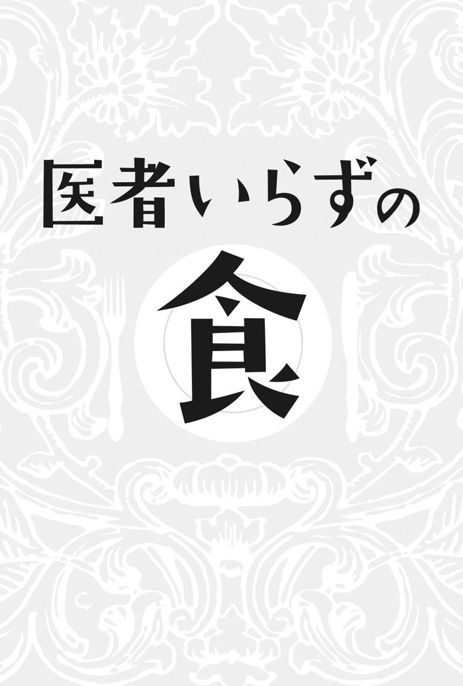
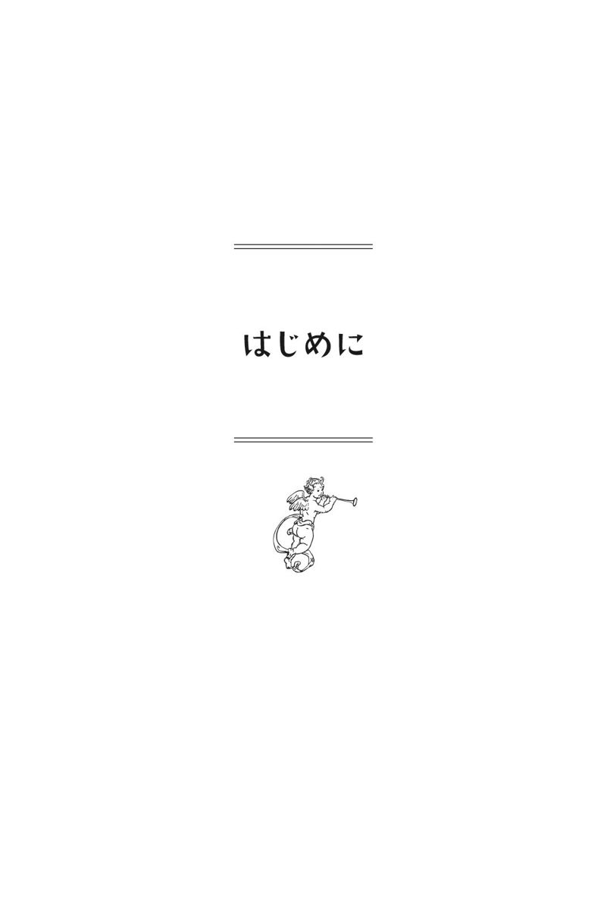
本書は「ｖｅｇｇｙ」編集部の依頼により実現したものである。
「ｖｅｇｇｙ」はその名のとおり、ベジタリアンの方々の雑誌である。ベジタリアンではない私に、しかも食の専門家ではない私に、「私なりの食の本を書いてほしい」という依頼があった時には少々驚きがあった。
私は講演などでベジタリアンの問題についても言及している。ある意味、ベジタリアンを否定したこともあるので、そんな私に依頼があるとは思っていなかったからだ。
もっとも、私はベジタリアンを完全否定しているわけではない。
そして、私は肉食推奨主義（アニマルフード）の提唱についても大きな疑問を抱いている。両者の対比とそれらがもたらす結果の考察は、私にとって大きなテーマであるし、ベジタリアンとアニマルフードの人々の不毛な対立の解消に寄与することができれば、意味があるだろうと思って引き受けた次第である。
この本のテーマの食に関してだけでなく、これまでの私のすべての著書に共通する考えがある。それは「正の不存在」だ。
人間の行動はいつも正しいとは限らない。にもかかわらず、人間はいつも自分が正しいと主張する。このことは私にとって、常に軽蔑の対象として映るのだ。
人間の行っていることがほんの少しでも正しければ、こんな世の中にはなっていない。だからこそ、その「間違った正しさ」を破壊して、いろいろな主義を持っている人々が楽に食べられるようになること、そして、食に対して注意しなくてはならない「明らかに間違っていること」を見直すきっかけになればと考え、この本を書くことにした。
「正の不存在」に関する観念論を除けば、この本に書いてある食の問題はことさら特記すべきものがあるわけではない。私は本来、食の専門家ではない。あえて言えば、医原病（医療行為が原因で生じる種々の悪化状態のこと）や薬害に対する専門家である（そもそもそんな専門分野はないので、私の専門分野はなしということになるが）。
したがって内容も、薬害ならぬ「食害」に関する事項が多くなるが、その点についてはご了承いただきたい。ただ、批判本となることを避けるため、５つのテーマ別のメニューも提案したので参考にしていただきたい。
講演やネット上で、よく「何を食べているのですか？」と聞かれるが、その答えの一部だと思っていただければ結構である。
食の問題は、人々にとって最も身近であると同時に普遍的な問題でもある。講演でもネット上の配信でも、食の話は人々の「食いつき」が一番強い。
食を顧みることは、世界の構造を知るための最初の一歩になると同時に、命そのものを考えるうえでも重要である。よって本書でも食の問題やメニューだけでなく、食に関連する話題についても指摘してみたいと思う。
これまで私は、精神医学否定の著書、医学否定の著書、社会毒や社会問題の著書、児童福祉や児童相談所の著書、陰謀論的内容の著書、子供に関する著書などを書いてきたが、あらためて考えると、いったい何を専門としているのかさっぱりわからない。
それも当然である。私は一応医者であるが、医者と医療ジャーナリストの中間のような存在なのだから。現代では私のような存在を「キュレーター」と呼ぶそうである。
もともとキュレーターとは、美術や学術的な専門知識を管理・監督する立場の人のことらしいが、ＩＴや情報社会の中では情報を収集し、分類してつなぎ合わせ、新しい価値観を持たせながら共有させる立場の人をいうそうだ。
そういわれてみれば、キュレーターというのは確かに私の行動に合致している。私は何かのスペシャリストになりたくて、現在の行動をとっているわけではない。ジェネラリストになりたいのと同時に、これらすべての枝葉な問題に取り組みたいわけでもない。
重要なのは、常に根本的な問題であり、原因であり、理由であり、原理であり、道理である。当然、食に関しても原理があり、道理が存在する。そしてそれは、栄養学とか食性とか遺伝などという枝葉な問題ではない。もっと根本的なものである。
本書によって、少しでもそのような観念が皆さまに伝わればと願っている。
最後に、この企画を用意していただいた吉良さん、佐藤さん、伊藤さんに感謝するとともに、いつもどおり活動を支えてくれている妻と娘にも感謝の言葉を贈り、はじめの言葉に代えさせていただきたい。
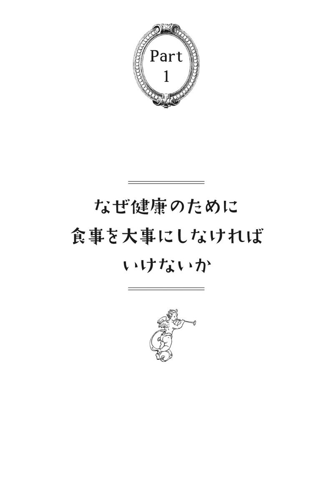
「生きること」と「食べること」は直結している
私たちの体は毎日摂る食べ物からできている。それでは、このことに関していったいどれだけの人が真剣に考えているだろうか。
そして、食べ物は単に肉体を構成するだけではなく、精神面においても深い影響を及ぼす。それは、食べ物に含まれる栄養やエネルギーだけでなく、食べ方そのものに関してもいえる。つまり、「生きるということ」と「食べるということ」は常に直結しているのだ。
農薬の使用が始まって以来、野菜に含まれるミネラルや栄養素は打ち消されてきた。肉は畜産における薬漬けのために毒だらけとなり、魚も海が汚れ、さらには放射能に汚染されて、やはり毒だらけである。
そうした内情を知る人は「食べるものがない」と嘆く。一方、何も気にせずに食べている人は、この本に書かれているようなことを指摘されても、「ほかに食べるものがないから気にしない」といっている。
その結果、必ずといっていいほど訪れるのは体の不調である。不健康となり、病院に世話になるのだ。しかもその病院では、日々「医原病」と人殺しが続いているが、これについては拙著『医学不要論』（三五館）を参考にしていただきたい。
現在、食と呼ばれるものはすべて大企業や生産者や販売業者の都合に支配されている。日持ちがいいことが売り物のブルームレスきゅうり、放射線を当てた芽の出ないジャガイモ、甘すぎるトマトや果物など、それらはすべて体のことを考えて作られているのではない。
人々は体の声を聞かず、脳の欲望に負けているのが現実である。有名な寄生虫博士の藤田紘一郎氏がおっしゃるように「脳はバカ、腸はかしこい」をそのまま体現している状態なのだ。
日本では添加物も、海外で使用禁止のものが当たり前のように使われている。
「食の専門家」という嘘つきたちに言わせると、その一つひとつは少量なので害がないことになる。しかし、そのデータ自体が怪しいこともさることながら、添加物が組み合わさった時の毒性に対しては、多くの懸念が示されている。
なにより、添加物や農薬などを解毒する材料（ミネラル・ビタミン・微量栄養素）の不足が体を不調にするといわれている。
※１ ブルームレスきゅうり：きゅうりの表面に出るブルーム（白い物質）をなくしたもので、今日ではブルームレスきゅうりが多く作られている。そもそもブルームにはきゅうりの水分が蒸発するのを防ぐ役目があることから、ブルームレスきゅうりは本来のきゅうりよりも果肉が固く、味が落ちるといわれている。
現代医学は病気を治せない
不調や病気の原因はすべてとまではいわないが、食が原因となるものが圧倒的に多い。そして、食が原因でもたらされた病気というものの存在を本質的に治すのではなく、その場しのぎでごまかすことこそが現代医学の基本姿勢なのである。
それは「維持」や「寛解」（症状を落ち着かせて安定させること）と呼ぶ類のものであって、断じて「治癒」ではない。根本的に治しているわけではないのだ。その結果、病気に対して医学の治療を行うと、ことごとく「医原病」に陥っていくことになる。
「治す」「治る」ということは、本質的には病院に通院しなくてもいい状態のことである。患者自身が気にしなくてもよい状態まで回復した場合をいう。その意味では、現代医学は決して病気を治せない。
これが、世の中でよく言われる「生活習慣病や慢性疾患や難病は、現代医学では一切治せない」ということの根幹なのだ。
この本では、そのような生活習慣病や慢性疾患や難病になぜ人々がなるのか。そして、それらを治癒に導くためには、いかなる考え方や食べ方が必要なのかを提示する。
ただし指摘しておきたいのは、この本に書いてあることがすべてではないということだ。人体は私ごときが把握できるほど甘いものではない。これはまた、この世に存在するすべての医師、食養家、治療家、セラピストにもいえることだ。
私に洗脳されることなく、常に勉強と研鑽を続け、自分に合った健康になる方法を模索してもらうことが最も重要だと考える。
「医療化」という洗脳
ここで、食を治せばすべてが治るかといえば、そうではないことも、ぜひ一度お考えいただきたい。また、食が医療に取り込まれるようになれば、実はそれは悲劇であることもお考えいただきたい。
なぜなら、食を含めて人々が医学にそうあってほしいと錯覚しているに過ぎないからだ。いまや医学の世界では精神医学を筆頭に、医学が医学を通り越して世界中のさまざまな問題を解決し、世界に幸福をもたらす存在であらねばならないかのような風潮が浸透している。
実際にはさまざまな社会的問題を医療が解決できるわけではないにもかかわらず、医療で解決できると考える概念を「医療化」と呼ぶが、食が医療に取り込まれてしまえば、これもまた「医療化」になりかねない。
医療や医学は、もっと小さなものとして存在すべきであり、医者が主導して行うものではないことも念頭に置くべきなのだ。
食に関する問題は、一般の人がそれを日々考えるような環境を作る必要がある。そこになんらかの専門家が携わるとしても、それは医師ではなく、栄養士などであろう。
ただし、現在の栄養士ほど嘘つきな職業も珍しい。したがって、現在のシステムと教育自体を変更しない限り、栄養士が普及することは好ましくないと考える。いい加減な栄養学が浸透するくらいなら、何もないほうがまだましとさえいえる。
大事なのは、自分で調べて自分で決めること
まず最初に皆さんにいいたいのは、「自分で必ずいろいろなことを調べてほしい」ということだ。私は専門家ではないからというのは、単なる逃げ道で言い訳でしかない。
医学の危険性や嘘について調べてみよう。食の危険性についても調べてみよう。
現代は書籍もネット情報も豊富にある。調べようとすれば、すぐに調べられる時代になっている。自分で調べない限り必ず不健康になり、不幸になる。まさしくそんな時代になっているのだ。
そして調べたことをもとにして、必ず自分で決めてほしい。自分の意見を簡単に他人にゆだねてはいけない。
たとえばアルコールは、咽頭ガン、食道ガン、肝硬変、慢性膵炎、尿路結石、神経因性膀胱、痴呆症、依存症など、さまざまな問題を引き起こすことをご存知だと思う。それを知らないで飲んでいるのは、相当のバカだといわれても仕方ない。
つまり重要なのは、それらを理解したうえで、何を考え、何を選択し、何を目的として自分が決断するのかということ。さらにその責任はすべて自分が背負うということなのだ。
アルコールを飲むこと自体は私も止めないが、アルコールが原因で病気になったとしたら、それで病院にかかることなど、私なら恥ずかしくてできない。
ところが、現代人は権利欲だけが肥大しているので自分を顧みることができない。その結果、食に直結する世界中の自然が汚染されているのだといえる。
実はこれは、あらゆるものに通じる問題である。そしてこれは、専門家だとか素人だとかいうことは関係ない話なのだ。ど素人でも絶対に必要な知識にたどり着くことができる。たどり着けないのは、たどり着く気がないからに過ぎない。
さらにいえば、権利だけを主張するのは、エゴイスティックなヒューマニズムに酔いしれているだけで、自然の摂理を感じ取ることができていないことの表れである。
子供を殺して才能を奪い取る「毒親」
自然の摂理にしたがうことは、食においても非常に重要な考え方となる。このことを私が強調する理由は、私自身が薬物依存の問題を取り扱っているからであり、さらには人類全体の依存心について提言を行っているからだ。
具体例として、発達障害と扱われる状態について考察してみる。
発達障害とは、自閉症やアスペルガー症候群やＡＤＨＤ（注意欠陥多動性障害）などといわれるものの総称だが、この発達障害が存在しないといわれたら、どう思うだろうか。
なぜないのか。詳しくは精神医学に関する拙著を読んでいただきたいが、簡単に説明すると、これらは状態を表したものに過ぎず、原因にまったく触れていないことが大きな問題点なのだ。さらにいえば、この状態を社会が許容できないことのほうがおかしい。主観によって、すなわち、大人の都合や社会の都合によって、このような病名をつけていることこそが問題なのだ。
発達障害と呼ばれるものの本質的な原因について考えてみよう。医学不要論にも掲載した基本的に思いつくべき原因について列挙してみる。以下のようなことがあげられるだろう。
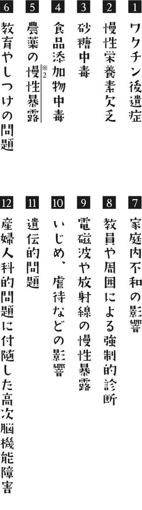
ほかにもあるかもしれないが、すぐに思いつくだけでもこれくらいはある。
それではこの中に本書で扱っている食の問題が、どれくらいの割合を占めているだろうか。相当数あると思われ、しかもそれらの大半は親が自覚さえすれば改善可能なのだ。
そのようなアプローチを行わず、精神薬を投与することによって子供を管理支配しようとする行為は、医原病と呼ぶことさえおこがましい。まさに、子供を殺して才能を奪い取るために存在するとさえいわざるを得ない。
このような親を「毒親」と呼ぶ。このことを理解しようとしない親は、自分の子供を殺したくて虐待しているといって、間違っているだろうか。
※２ 慢性暴露：慢性的にさらされること
「コレステロールが高いと危険」という嘘
食とかかわる有名な病気に高血圧、高脂血症、糖尿病などがある。医原病に関連して、これらの話を少ししよう。
実は、「コレステロール値が高いと危険である」というのはまったくの嘘なのだ。もちろん高すぎると危険であるが、現在の基準は医学や製薬業界の金儲けのために基準が捏造されている。
以下、拙著『医学不要論』にも掲載したデータを紹介する。
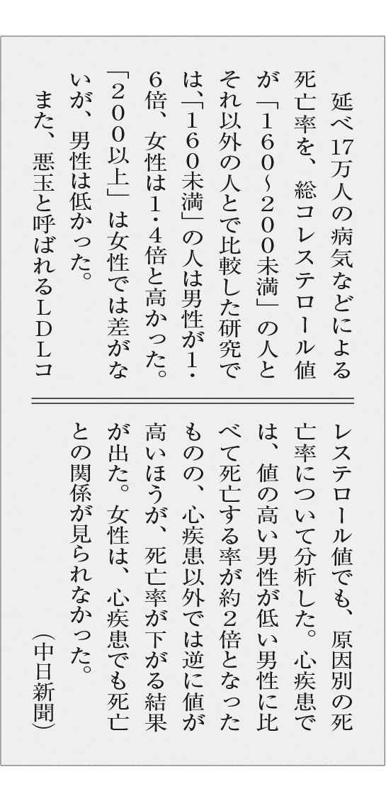
要するに「コレステロールが高いと危険である」というのは、動脈硬化関連疾患を扱う病院による患者を増やすための方便なのだ。特に閉経後の女性はコレステロールが高くなる。
食事療法という言葉があるように、それこそこの本の主題である食を意識することによって、適正なコレステロールに近づけることはできる。年齢や性別にもよるが、コレステロールは２４０～２８０までなら食事に留意することで十分である。そして２４０～２８０くらいのほうが病気のリスクが少ないのだ。
ちなみにコレステロールの薬は副作用が種々あるだけでなく、発ガン性を増すことが知られており、代表的な医原病薬といわざるを得ない。
高血圧、糖尿病、生活習慣病をめぐる嘘
血圧にも同じ構図があてはまる。これも拙著『医学不要論』に掲載したデータである。
１９９２年～１９９８年まで実施された比較試験
70歳以上の高齢者で血圧が１６０～１７９ならば、降圧剤を使用しなくても脳卒中や心筋梗塞にかかる率に差はなく、ガンになった人はむしろ少なかった。
１９９２年～１９９７年に欧米で実施された比較試験「ＨＯＴ研究」
１３０／85未満でよかったのは、心筋梗塞にかかる人が減ったことだけで、下の血圧を80近くまで下げると、90未満を目標にして下げるよりも死亡率が高くなった。この１３０／85のとおりに下げようとすると要治療者が増え、日本で年間１兆円の医療費が余分に必要となり、しかも数万人が余計に死亡する危険性があると推測できる。
つまり、血圧の下げすぎは非常に危険なのだ。昔は１６０／95からを高血圧といったが、昔の基準のほうがよほど健康的だったことがわかる。
代表的な降圧薬はカルシウム拮抗薬とＡＲＢ（アンジオテンシンⅡ受容体拮抗薬）だが、これらもコレステロールの薬と同様にガンの発生率を増す。そして、カルシウム拮抗薬が長期的には心不全を増やすこと、ＡＲＢが心不全に使われた場合、突然死が起きることも指摘されている。
また血圧については、ぜひ本当の塩とニセモノの塩の違いついても勉強していただきたい。
糖尿病にいたっては適切な食事により、ほぼ血糖を低下させることは可能である。しかし、医師だけでなく現代人も砂糖に代表される甘いものに完全に依存しており、糖を食事から減らすためのアプローチを実行することができない。
糖尿の薬も一時的には血糖を下げはするが、その結果、体内はインスリンを出さない状態、もしくは疲弊した状態に変化させていく。そして結局は薬が増えて、糖尿病は悪くなるという結果をたどる。
アクトスに代表されるように発ガン性、心不全、突然死などのリスクが高まる薬も同じように多くある。
いわゆる生活習慣病という言葉を作ったのは某有名医師だそうだが、その目的は医学を広めて医学利権を広め、食に関しても体の問題として医療化を広めたかったからにほかならない。
この生活習慣病という言葉こそ、人類は捨てなければならない。生活習慣や食に関するものが、どうして医学の病気となりえようか？ それは医学が扱う病気などというレベルではない。あくまでも食に直結した問題でしかないのだ。
食の勉強や栄養の勉強などろくにしたこともない医師たちに、何ひとつ解決できるものではない。
※３ アクトス（アクトス錠）：インスリンの働きを高めることによって、高血糖を改善するといわれる薬で、 通常は２型糖尿病の治療に用いられる。アレルギー症状をおこす可能性があるため、合併症などその他の症状がある方は注意したほうがよいとされる。
「西洋医学は対症療法であり病気を治せない」の意味
世界の最先端とされるアメリカ西洋医学において、最も死亡数が多い病気が何か、ご存知だろうか。実は、それこそが医原病である。以下のことは拙著『医学不要論』に記載しているが、要約して抜粋しよう。
医療（西洋医学）が原因で死亡する米国人はある年78万３９３６人、ちなみに心疾患（心筋梗塞など）が69万９６９７人であり、ガンは55万３２５１人となっている（ニューヨークのＮＰＯ法人「アメリカ栄養研究所」の創立者であるゲーリー・ヌル博士の２００４年の論文より）。
この数字は近年、若干の変化が見られるだろうが、私個人としてはさらに医原病死の数が増えているのではないかと推測している。そして、医原病で亡くなっている方の大半は、薬物の問題が死因と予測される。
なぜこうなるのか。その主たる原因は薬物の作り方や考え方にあり、それがこうした医原病や薬害を生み出している。要するに、製薬会社は人を治すための薬などは作っていないということだ。
ある論文をもとに推測すれば、約85％の「病気・症状」は科学的に原因不明で、しかも原因不明であるにもかかわらず、それらの捏造された「病気」に対して薬が開発されている。こんなことをしていて治る道理などない。
これが、世に言われる「西洋医学は対症療法であり病気を治せない」の主たる意味である。
日本で行われている医学検査の大半も無意味であるといって過言ではない。それらの検査の大半は病気づくりのために用いられており、あるいは人々の安心のためだけに用いられている。
それでもその検査に害がなければいいだろうが、実際は「病気づくり↓医原病・薬害の構図」を生み出すだけでなく、検査自体が多くの弊害をもたらしている。
その代表格は、放射線に関する検査であろう。いわゆるＣＴ検査やバリウム検査、ＰＥＴ検査やマンモグラフィーに代表されるものだ。これらの検査はガンを増やすことがすでに判明している。
著名な米国の医学者であるロバート・メンデルソン医師は、アメリカで行われているＸ線撮影の30％は、医学的になんの必要性もないと述べているが、私はその数字でさえ低いと考える。
日本ほどＸ線検査を行っている国は、世界中で類を見ない。言葉を換えれば、「日本人は世界一ガンになりたがっている愚かな国民である」ということになる。
吐くこと、下痢することにも必然性がある
この構図を知っていることは非常に重要である。なぜなら、この構図を知っていなければ、「食を重視する」ことの意味の理解ができないからだ。
食を重視するということは、医学や健康に対してその根本原因に取り組もうという姿勢の表れであり、この考え方なしに食に着目しても意味はない。
代替療法──そもそもこの呼び方がおかしい──に代表される、ほぼすべての治療法は、必ず食の重要性を訴えている。それぞれの違いは方向性の違いに過ぎない。
重要なのは、それらのすべての真なる医学的療法は、根本から治す方法がないのかと模索するための手段であると理解することなのだ。
そして、西洋医学の薬にダメ出しがされる理由は、根本的に治す気がまったくないままに開発されるからである。この西洋医学系の考え方は、実は食にも誘導されており、人々が健康にいいと思っていることでも実際にはそうでないことが多く見られる。
ここでは食に関する話として、プロバイオティクス（人体に良い影響を与える微生物、またはそれらを含む製品・食品のこと）についてあげる。要するに、「生きた菌を多量に腸に与える」という観念と、その実践がプロバイオティクスである。
ここで、本当にプロバイオティクスは体にいいかという問いかけをする。なぜなら、それはこの本のテーマである食に密接に関係しているからだ。
プロバイオティクス製剤が使われるのは、ほとんどが胃腸に関する不調であろう。しかし、まず頭に置くべき考え方は、吐くことにも下痢することにも必然性があるということである。つまり、それらは生体防御反応であり、基本的に抑えてはいけないということだ。
ところが、現代医学では基本的に吐き気止めが出され、下痢止めが出される。実は、それは死に近づきたいといっているのと同じであることさえ一般人は気づいていない。
そもそも食べられないということは、「食べてはいけない」とあなたの胃腸がささやいているのだ。胃腸のそのささやきは、あなたの脳ほど愚かではない。脳は騙されやすいが、胃腸はより原始的、生存的な存在なのである。
この点を追求していくと、乳酸菌製剤（ビオフェルミンなど）を薬として使うことさえ問題となってくる。論文としては、強化乳酸菌製剤を飲むとむしろ膵炎が悪化するなどの報告が見られるが、これは膵炎に限ったことではない。
さらにいえば、下痢や胃腸炎などで正露丸（プロバイオティクスではないが）を飲むことも胃腸炎を悪化させる可能性がある。
「直接的」すぎる医療行為は人体に悪影響がある
乳酸菌治療の問題点としては、以下の点があげられる。
腸内細菌は本来、白血球などの糖鎖と相性の良い糖鎖を持った菌が定住する
発酵食品などの乳酸菌は小腸上部でほとんどが死滅する
腸管に到達するのは「少量の生菌、死菌、菌体成分、代謝産物」である
腸管に到達した生菌は健康体であればほとんどが排泄され、定住することはない
生菌が大量（１００万個）に腸官に到達するのは食中毒ぐらいである（常在菌に悪影響）
私は「菌を意識するな。発酵食品を意識するな」といっているのではない。誤解が生まれそうなので、ここで説明しておこう。
発酵食品は人類の叡智として生き延びてきた食品の知恵として重要だが、それがプロバイオティクス製剤になった瞬間に、まったく「自然」ではなくなることが問題なのだ。
人体の中に菌がいるから、その菌を人為的に増やせば健康だなどというが、これほど科学を装った非科学的で、不自然で不道理な話はない。発酵食品が胃酸で消化されて多くの菌が死んでしまうことにもちゃんと意味があるのだ。
これも見方を変えれば、人類が作った薬剤による薬害と変わりがないではないか。もちろん、ほかの重大な薬害に比べると大したものではないのだが。
たとえば精神医学の分野では、精神病はホルモンの異常（セロトニンやドーパミン、グルタミンやアドレナリンなどの増減）であるという捏造理論により、そのホルモンを増やしたり減らしたりするドラッグが用いられている。これは違法ドラッグと同じ構造をしており、とても薬などと呼べる物質ではない。
さらにいえば、人体はこうしたホルモンや菌などを直接与えてしまうと、むしろ悪化してしまうのである。砂糖などにも同じことが言えるのだが（１２６ページ参照）、直接体に与えることは、まさに「直接的」すぎるのである。したがって、このような直接的な行為は救急医学くらいしか行ってはいけないのだ。
確実にいえることは、人類は進歩したと勘違いしているようだが、実際は食事についても医学についても、進歩しているとは言い難い状況にある。そして、その進歩を阻んでいるのは利益誘導や利権であるが、利権がからんでいない一般人でさえ、すでに誤解している。
さらに、これは多くの健康食品にも同じことがいえる。
この認識なくして食の問題について本を書くというのは、すべてにおいて嘘をついているといっても過言ではない。
古典的民族がかかった病気
クスリを飲む野生動物はいない。
だから人間は野生動物には勝てない。
生命力でも生存力でも病気でも。
ということを、私はよく口にする。これが間違っているとは思っていないし、事実として野生動物は現代の人間よりよほど賢いといえる。
本来、人間は野生動物より賢いのかもしれない。本当の意味での知恵と有益な文明だけを生かせば、人間は間違いなく野生動物より賢く繁栄することができるだろう。しかし、実際は破壊的な肥大だけを続けて、地球を汚染し続けている。地球にとって最大のガン細胞に人間は堕している。
今、人類は野生動物や古典的民族（たとえばイヌイットやネイティブアメリカン、アイヌやその他多くの民族）の生活や食生活をヒントとすべきである。さらにいえば、人類が文明を作ってきた良い意味での知恵を、それらとミックスして人類の真の繁栄を目指す必要がある。
なぜなら、そうしなければ世界は本当に一部の大金持ちに支配されて、死に絶えかねないからだ。
さて、昔の病気、野生動物がかかる病気といえばなんであろうか。
感染症
骨折
他の獣に襲われる
死産
食糧難による栄養失調
老衰
などが主となるだろう。ここでは老衰が病気であるかどうかは問わないでおく。これ以外にガンや心臓病なども存在するが、真の野生動物（たとえばサバンナや密林などで暮らす野生動物）には、ガンや心臓病が非常に少ないことが知られている。同様に古典的民族もガンや心臓病が少なかったことが知られている。
野生の動物というと、日本の山に住んでいるタヌキや鳥を野生の動物と見立てて、彼らが病気にならないのは嘘である、あるいは彼らにもガンがあるという論調もあるが、これは的外れな話だ。
ここでいう野生動物の概念とは、「現代の動物園で飼われていない動物」という意味ではなく、人為的な毒物が一切存在しない時代の野生動物という意味である。ただし私は、別に野生動物だから病気にならないといっているわけではない。あくまで病気の質の問題であり、種類の問題であるということを述べている。
そして、野生動物がかかりやすい病気は、そのまま古典的民族がかかりやすい病気にも通じている。別に彼らは不死だったわけではない。我々とは死ぬ原因が異なっていたという点が重要なのである。古典的民族はある年齢まで達すると非常に長寿の人が多く、痴呆なども少なかったことが重要である。
老衰で死ぬ現代人がほとんどいない理由
ひるがえって現代人や現代の動物園に飼われている動物や一般のペットたちは、いかなる病気にかかるのか。それが、まさに「現代病」といわれるものであろう。たとえば、
ガン
心筋梗塞などの心臓病
脳梗塞や脳出血など
アレルギーと呼ばれる病気
神経疾患や免疫疾患といわれる難病
精神疾患と呼ばれる類のもの
機能性疾患と呼ばれる類のもの
である。もちろんこれだけでなく、野生動物でもかかる、
感染症
骨折
外傷
なども主たる病気であるが、死産については明らかに昔より減っているといえる。栄養失調については先進国と発展途上国で違いがあるとされるが、実は先進国の人々が重大な栄養失調であることに、ほとんどの人は気づいていない。
現代人で老衰で死ねる人（ガンや動脈硬化性疾患や感染症などにならず、エネルギーの枯渇で安らかに死ねること）はほとんどいないだろう。
実はこれは、食を考えるうえで重要なヒントとなる。つまり、我々は自らがかかる病気の多くを、自分たちが食べているものや自分たちがまわりに振り撒いている毒によって作っているということである。
したがって、その食やまわりの毒を排除することができれば、人類はかなり多くの病気を予防的に克服することができるのだ。
そして、野生動物や古典的民族がかかっていた、現代におけるほんの一部の「真の病気」だけを治療することができれば医学の価値も高まるし、健康で大往生できることになる。
ところが、どうやら人類はそうなりたいとは考えていないようである。
もはや現代人は「奴隷」と考えるしかない
各論はPart ３にゆずるが、農薬や化学肥料で育てられる作物、本来不必要な食品にも添加される化学物質たち、これらを排除して自然栽培作物、添加物なしの食品等に留意していけば我々は健康になるし、精神的にも充足感を得やすくなる。
しかし、現代社会には利益だけを目的とした守銭奴が蔓延しており、消費者の安心・安全、健康に留意した製品は大企業製品の場合、ほとんど作られていないといえる。依存性のある食物が大量に生産され、その結果、飽食とは名ばかりの栄養素がかけらもないものばかりを食べることになる。栄養素だけでなく、精神的な面においても文化的な退廃と退化をきたしているといってよい。
現代人は、動物としての野性的な利点や古典的民族が持つ自然への畏敬、精神的協調性を失ってしまっているのだ。
世界中の大企業や医学界や製薬業界、はては食品産業や農薬産業や穀物メジャーにいたるまで、彼らの立場に立って考えてみれば、我々一般人など豚や羊を飼い殺しにしているのと同じ状況なのだ。
そこには、貧乏でも誇りある人間というものはもはや存在しない。独立していると思っているすべての人々でさえ、実際にはあらゆる意味で支配を受けていることに気づいていない。
我々は生まれた時から子供に添加物入りのシロップを飲ませ、その次に添加物入りのミルクを飲ませ、さらに毒まみれのおむつを使っている。いや、それ以前に子供に与えている母乳には、すでに多量のダイオキシンが含まれている。
日本人の母乳中のダイオキシン濃度は、私が知る限り世界一高い。多いとされるヨーロッパ人と比べても１・３倍から１・５倍くらいの開きがある。
それらは延々と我々一般人を汚染しているが、こんなことを続けていれば、人類は考える能力と調べる能力、世界を見る能力を同時に失ってしまう。「現代人は知恵をなくしている」というのは、このことをいう。
世界の事情を詳しく見ていけば、自分たちが奴隷であると考えるしかない。しかし、真の意味で奴隷になりたいなどと思う人など誰もいないであろう。
だからこそ、どうすべきか、何をなすべきかを自分で考えねばならないのだ。
現在に合致した食べ物を考えることの重要性
私が古代の人々の話をすると、愚かな科学論者や利権業者の人間たちは「すべてを原始時代に戻せという愚かな論調」という反論をする。もちろん、私がいいたいのは、そういうことではない。
私は頭がおかしいなどといわれているが一応、医者である。日々パソコンも使っているし、電子カルテも使っている。電灯も使っているし、時にはエアコンも使っている。それらのすべてを否定しているわけではないが、それらが満ちている現代であるからこそ、アンチテーゼとしての古代という概念にヒントを見つけるべきだと主張しているのだ。
「アンパンマン」という有名なアニメがある。作者のやなせたかし氏は戦後のものが食べられなかった頃を思って「アンパンマン」を描いたそうだが、実はここに出てくるキャラクターや食べ物は、医学面からだけ考えると、かなり体に悪いものばかりである。
しかし、それは概念的にはすべて悪いことだろうか。
やなせ氏は、ヒーローとは飢えている時（空腹の時）に食べ物を与えてくれる存在だという。この考え方の大きな特徴は、生まれてきた時代の変化にほかならない。我々は終戦直後とは違う世界を生きている。だからこそ、今の世界の事情に応じて真の意味で地球のため、子供のため、食事のためになることを模索せねばならない。
一週間何も食べていない人は、一つのアンパンと１０００万円（そのお金で食物は買えないと仮定して）のどちらを選ぶだろうか？ 遠くまで行ってもその１０００万円は食べ物にならないが、違う星まで飛んでいければ食べ物に変わるとしたら、どうだろうか？
人間のつまらない常識で考えれば、それでも１０００万円を選ぶ人がいるかもしれないが、実際にその場に立てば、ほとんどの人は一つのアンパンを選ぶであろう。食べ物にはそのような意味があることを決して忘れてはならない。
添加物入りのパンや農薬入りの野菜も、死ぬか生きるかであれば許容はできる。しかし、現代の日本ではそれを避けることが可能であり、国家の方針として毒まみれではない食べ物を供給することが理論上可能なのだ。それなのに実際は、面倒くさいため、利益追求のためだけにそうしているに過ぎないのだ。
肉食、菜食、フルータリアン
ここで、友人の歯科医に教えてもらったネイティブアメリカンの有名な言葉を紹介する。肉食礼賛の愚行、草食礼賛の愚行についてはChapter７を参照にしていただきたいが、まずこの言葉をかみしめてもらいたい。
１６７６年、ノヴァ・スコティアでミクマック族の首長が語った言葉
「あなた方フランス人のつくるパンやワインは、わしらの生活の中に、つねにあったというわけじゃない。だが事実として、フランス人がこのあたりにやってくるまでは、わがミクマック族の者たちは、もっと長生きをしていたのではなかったか。わしらのなかに百三十歳や百四十歳まで生きる老人たちは、もはやすっかり姿を消してしまった。
理由ははっきりしている。わしらがあなた方の生活習慣を、しだいに取り入れるようになってしまったからだ。このことは、経験に照らしてみても明白だ。
わしらの仲間のなかで、あなた方のパンやワインやブランデーを軽蔑して、わしらの祖先たちと全ミクマック族の習慣にもとづいて、ただビーバーやヘラジカや水鳥や魚などの、自然のもたらす食べ物だけに満足しているものは、いちばん長生きをしているからだ。
わしの兄弟よ、わしはあなた方に自分の心を開かなければと思っているのだから、今度という今度はわかってほしい。ここらにいる者で、自分のことをフランス人よりもずっとずっと幸福で、ずっとずっと力に満ちていると感じていない者など、ひとりもいないのだ、ということを」
また、これとは異なる提言もある。八〇歳まで生きたければ玄米を食べるのがよい。一二〇歳まで生きたければフルーツを食べるのがよいという言葉もある。
皆さんはご存じだろうか。なぜ、こうした相反するように見える事柄が成立するのかを。古典の民族たちはどうやってそれを体現してきたのか、人々は真剣に考えたことがあるだろうか。
さらにいえば、どちらが正しいなどと、まるで派閥争いをするようかのように主張しあう理由が本来、存在するのだろうか。
以下はローフードやフルータリアンについて書かれた著書である。
『フィット・フォー・ライフ 健康長寿には「不滅の原則」があった！』
ハーヴィー・ダイアモンド、マリリン・ダイアモンド（著）、松田麻美子（訳）、グスコー出版
『新・健康学「偏食」のすすめ ヒトは果物を食べるように生まれついている』
永樂和重（著）教育評論社
これらの本は、ゴリラやオランウータンなどに近似する人間の本来の食性は、「雑食」ではなく「果実食」であることを述べたフルータリアンの提言書である。正確には果実だけでなく、「果実食＋葉食」ということなのでベジタリアンの一種ともいえる。
ローフードとは菜食ということではなく、生食を重視することが基本となる。熱帯などで暮らす古くからの民族の中にもフルータリアンで生き延びてきた種族は存在している。
日本人の死因の変化
そもそも日本人の歴史に目を向けても、その主たる食物は、実は「コメ」ではない。昔の日本人の主食は「コメ」ではなかったようなのだ。『稲の日本史』（佐藤洋一郎著・角川書店）より要約して抜粋する。
「日本のイネも稲作も多重な構造をもっている。縄文時代に渡来したと思われる熱帯ジャポニカと焼畑の稲作と、弥生時代に渡来した温帯ジャポニカと水田稲作の二つが主となる。
縄文の要素は弥生の要素にとって代わられ、姿を消したものと考えられてきた。だが弥生時代以降のイネと稲作の中に、縄文の要素はしぶとく生き残っていたようである。
イネのなかった時代では生活の糧の主な部分は狩猟と採集によっていたが、部分的には原始的な農業も行われていた。巨大集落が誕生した頃、西日本各地ではイネの栽培がほそぼそと始まっていた（日本最古の稲作の痕跡、岡山市内にある６４００年ほど前の朝寝鼻貝塚からイネのプラントオパールが発見された。１９９９年４月20日）。その後、西日本では６０００年ほど前（縄文時代前期から中期頃）、東日本ではずっと遅れて３０００年ほど前からイネと稲作は広がりを見せた。しかし、米が主食というような状態ではなかったようだ。
大陸から水田稲作の技術が持ち込まれるようになって、中世の終わり頃まで続く稲作と採集の混合が続くことになる。
弥生時代の人々の中でもっともポピュラーであった植物資源はドングリの仲間であり、イネがこれに続くが、そのウエイトは全体の中ではそんなに大きくない。日本列島では農耕の開始や広まりは実にゆっくりしたものだったのだ。
その後、水田稲作が少しずつ定着するが、『見渡す限りの水田』という景観が登場したのは、おそらく太閤検地のあと、あるいは近世に入ってからであるらしい。近代になり科学の発達に伴い収穫は増えるようになったが、反面、中身は毒だらけになったといえるかもしれない」
日本人の食事は１９５０年代後半から西洋食が普及し、それに伴い日本人の死因に変化が現れた。戦後すぐの死因は結核、呼吸器感染、胃腸炎、脳血管疾患、老衰だった。１９５０年代後半くらいからはガン、心臓病、脳卒中へと死因が変わった。
現在、老衰でなくなる人は２・８％で、２００人のうち５人程度とも聞こえてくる。特に１９７０年以降は食生活の欧米化と化学物質（添加物、医薬品）により腸内細菌がダメージを受けて、アレルギーなど自己免疫疾患が増加している。
「一物全体」と日本食
現代人と古代人は、もちろんいろいろな面で異なる。たとえば、ネイティブアメリカンのような狩猟生活を全員がすれば、あっという間に動物たちは絶滅してしまうだろう。だからこそ現代では農耕が重視されるともいえるのだが、時代の変遷による農耕の中で、我々が古代人にならって重視しなければならないのが「ホールフード」である。
ホールフードとは、食養の言葉でいうと「一物全体」となる。特に日本人は米食が減っており、その一方で小麦食が増えているので、この考え方は非常に重要といえる。
また、日本においては日本食自体の見直しも必須である。世界ではアメリカを中心として、日本食を参考にする風潮とその研究が進んでいることは１１７ページを参照していただきたいが、一物全体と日本食はセットで考えねばならない。
日本の栄養学者では、山田豊文氏が「細胞環境デザイン学」と呼ばれるものを提唱している。これは非常に面白い考え方で、斬新といえば斬新だが、当たり前といえば当たり前である。
詳しい内容は氏の著書を読んでいただきたいが、我々の人体の細胞は適応により変化していく。それは遺伝子でさえも変化していくということになる。
これは、古代の民族が古代の食事に合わせて体を作っていったように、我々は農耕の普及によって少しずつ農耕に沿うような肉体に変化してきたということだ。農耕は食料や人口問題とも密接にかかわる問題なので、現代の食は農耕を切り離すことができない。
このようないきさつを理解したうえで、初めて玄米が健康によいか否かが問われるのである。玄米の利点と問題点、そして白米の問題点については１３７ページを参照していただきたい。
一日三食を食べると不健康になる
もう一つ提言しておかねばならない重要なテーマがある。それは、一日三食を食べるという問題だ。これも現代人の食事を考えるうえで重要な問題となる。
結論からいうと、一日三食を食べると不健康になる。
私がこの話をすると、必ず「え？」という反応がある。なぜなら、一般人にとって朝昼晩三回食事をとることは、ずっと推奨されてきたからだ。
しかし、これが食品産業や栄養学者たちによるプロパガンダであることは、ちょっと調べれば簡単にわかる。ぜひ一度、調べてみてもらいたい。興味ある方は『朝食有害説』（渡辺正著、情報センター出版局）を読んでみるといいだろう。
ちなみに、私は一日一食しか食べない。その前は一日二食だった。
これは、古代の人々の食べ方や野生の動物の食べ方を参考にすればわかる。野生の動物は一日三回、律儀に食べるなどということはしない。特に肉食動物は狩猟だけでもひと苦労であり、一日に三食も食べることはできない。
一方、草食動物はエネルギー維持のためにかなりの時間を食事に使うが、これも律儀に食べるという法則はない。また、野生の草食動物（たとえばサバンナの動物）などは、住む場所を移動するような時期になれば当然、食べることができない時期が訪れることになる。彼らはそれでも、肉体も精神も保てるような構造になっているのだ。
古代の人々も同様である。ネイティブアメリカンやイヌイット、アイヌやアボリジニ（オーストラリアの先住民）の人々、さらにいえば平安時代や江戸時代の人々でさえ、一日三食を食べるなどということはなかった。
彼らは狩猟ができた時にまとめて食べるということも多かったし、農耕が浸透してきた後の時代でも一日二食が一般的であった。現在と比べると「この程度なのか」という粗食でも、今の我々より健康な肉体を持っていた。
結局のところ、「一日三食を食べよう！」などというのは基本的にはメディアによる扇動でしかない。今の日本の食料自給率の低さを見ればわかるように、国民に対して必要以上の「食料需要」を煽ることは、米国穀物メジャーや食料ビジネスに直結しているのだ。ラーメンブームを煽り立てたことで小麦の需要が飛躍的に増加し、それで得をしたのは外資系の大手穀物企業であった。
結局、自然か不自然かを見極められる直感力を身につけて、少しでも自然に近づく努力をすることが、本当の意味での健康を取り戻す最良の手段なのだ。
そしてこのことは、食の本質や医療の本質を知るだけではダメで、最終的には世界の権力の構造、世界の本質的な構造にまで思考を及ばせることができなければ、本当の意味での理解を手に入れることはできない。
言葉を換えれば、科学などなくても古代の人々は本質や真理に気づこうとする考え方を持っていた。下手に科学が浸透したからこそ、人々は不健康になったのだということに気付かねばならない。
我々人間にできることとは
ここからは、古代の人々の観念論を含めた思想上の問題となってくる。
近年の人類は家畜であった牛や豚や鶏を食べているが、昔は外の野生の生き物を狩りをしたり、魚を捕ったりしてそれを食していた。そして、その習慣は消えることなく続いてきたことを忘れてはならない。
人間は生きるために他の生き物の命を奪い、それを食することなしには生きていけないという根源的な問題を抱えた存在であることも忘れてはならない。同時に、我々は死するべき時には動物と同じように死に、自らの体は微生物に捧げるという気持ちなくしては、食べるという行為は許されるものではない。
西欧に始まった自然保護、動物保護と人間の共生という潮流は、経済的に豊かになって飽食の時代にさしかかったことと、高度に政治的な問題がからんで発展してきた。ただし、日本人の動物観や食への概念には、アニミズムを含めた神道や仏教なども融合した思想があることも忘れてはならない。
輪廻転生を信じるかどうかは個人の自由だが、生命が食物連鎖の中で循環していることは間違いのない事実である。すべての命は自然の摂理によって生かされていることを自覚し、地球も地球上のあらゆる命も一体であるということを自覚せねば、この先の人類に未来はないといっても過言ではない。
動物愛護を唱える時、ヒューマニズムに走って死殺のすべてを否定しても意味をなさない。我々人類にできることがあるとすれば、感謝して食べることと同時に、死すべき時に死に、我々の身を自然に返すことである。
この意味においても医療はそのほとんどが不要であり、我々は本来、すぐにでも食べられなければならないのだ。
生きものとは宇宙の意思によって見えないエネルギーが物質化され、生体化されたものであるとする考え方がある。非科学的だが、それでいいではないかと私は思う。このように多くの人が考えられるようになれば、古代の世界のごとく霞を食べ、動物と会話して、次元を超越することができるのかもしれない。
人間の概念で動物たちを推し量ってはいけないのだ。
嘘をまき散らしてきた栄養学
食とは栄養の面からだけで語れるものではないが、それでもやはり栄養は重要な要素となる。そこで、日本における有名な栄養学の話をいくつか引用してみたい。
まず現在、日本人が食べているものはカス同然であるということを、皆さんは知っているだろうか。これは栄養学から食品を語るうえでの基本であり、サプリメントを摂る多くの人々の論拠ともなっている（サプリメントについてはChapter10参照）。
もっとも以下の数字を見れば、サプリメントを飲みたくなるのも道理である。ここに、さらに農薬が混ぜられ（というより含有しているから栄養素が下がり）、ほかの毒も混ざっているとなれば、人々が不健康になるのも当たり前であろう。
食品の栄養価の目安は、文部科学省が公開している日本食品標準成分表を改訂版ごとに比較すれば明らかとなる。現代の野菜に含まれるビタミンは、種類にもよるが、30年前の20～50％くらいしか含まれなくなってきている。
トマトなどは特に顕著で、１９５０年時と比べると、ビタミンＣは50年前の２分の１、鉄分にいたっては実に25分の１しか含まれていないそうだ。
その原因は野菜が育つ畑の土壌の変化、農薬、品種改良などにある。
昔の農法では微量ミネラルが土に還元され、そこで育つ作物は栄養がバランスよく豊富に含まれていたが、化学肥料や農薬が使われることにより、微量ミネラルが作物に取り込まれなくなってしまった。
また、野菜の品種改良なども大きな問題である。大量生産や生産効率等の観点からのみ進められた品種改良では、野菜の含有栄養価自体がまったく無視されてきたからだ。
これらは食品業界全体によって巧妙に作られてきた甘い罠といえる。ただし、その責任を食品業界だけになすりつけるのもおかしな話である。
「30品目」というデマ、「必要栄養素量」というウソなどをまき散らすことで普遍的な利益が得られるように大衆を洗脳してきたのは栄養学であり、その栄養学の間違いが原因にある。
前述したように一日三食主義も洗脳であった。そして、便利さばかりを追求し、加工食品を求め続け、大量の食材廃棄を毎日繰り返している一般市民の責任はなによりも大きいといえるだろう。
しかし、一般市民は自分たちの罪など認める気はさらさらない。ひたすら自己正当化をするのみである。
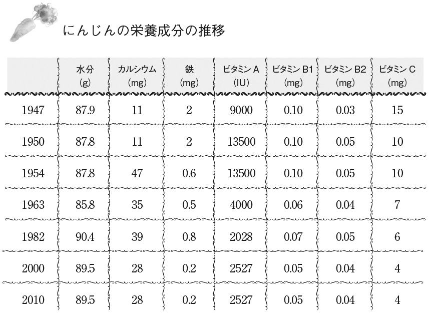
日本古来の知恵「まごはやさしい」
今、本当に必要なのは、添加物や農薬などが含まれない、普通の栄養素が豊富な食べ物であり、さらにいえば、産業構造そのものの変化である。
日本には土地がないといわれるが、実際には余っていて、それを耕す人々もいる。本来、医療関係者や福祉関係者、その他の三次産業の人間などはこれほどの数が必要ないはずだ。しかし日本人は、土ではなく金と利権に属しているほうがカッコイイと洗脳され続けてきた。
本書の読者にも、農家や食そのものを作る人はほとんどいないであろう。有益な食を作る人々に名誉と報酬が渡るようにシステムを変えることなくして、もはや日本が食の面で独立することはできないようにさえ思う。
その意味では、農協などという存在は論外の極致と断ずることができる。彼らは言い訳と正当化以外に何もできない存在なのだ。
「まごはやさしい」とは食養生の考え方の一つで、昔から日本にあるおなじみの食材ばかりである。そしてまた、栄養学的にも理にかなった内容であるといえる。
「まごはやさしい」とは、大別すれば以下になる。
ま（まめ） ＝豆類
ご（ごま） ＝種実類
わ（わかめ） ＝海藻類
や（やさい） ＝緑黄色野菜、淡色野菜、根菜
さ（さかな） ＝魚介類
し（しいたけ） ＝きのこ類
い（いも） ＝いも類
なお、肉については常に賛否両論があるので１０９ページを参照していただきたい。
私の考えをつけ加えると、豆類は発酵ものを食べること、ごまと海藻は特に重視して食べることを推奨している（海藻は放射能が心配だが）。きのこについてはカビなんぞ食べるのかと昔はよくいわれたが、人間は本来、カビや菌を食べる必要があるのだ。
ただ残念ながら、これらの食材のほとんどは、放射能を含めたなんらかの毒に汚染されているという欠点がある。きのこ類は放射能を吸収しやすく、海産物も垂れ流しの放射能によりかなり汚染されてきているといえよう。
脂質の問題
ここからはやや各論的な栄養学の話になるが、まずは脂質について説明する。
脂質はたんぱく質、糖質と並ぶ三大栄養素の一つである。脂質には単純脂質（アルコールと脂肪酸のエステル）と複雑脂質（リン脂質など）と誘導脂質があるとされるが、多種多様なようである。その中でも有名なのは脂肪酸であり、飽和脂肪酸（動物性の脂中心）と不飽和脂肪酸（植物性の脂中心）に分けられ、不飽和脂肪酸には一価不飽和脂肪酸と多価不飽和脂肪酸がある。多価不飽和脂肪酸にはオメガ３系（リノレン酸）、オメガ６系（リノール酸）に分けられ、一価不飽和脂肪酸はオメガ９系（オレイン酸）などが代表的である。
必須脂肪酸が不足するとエネルギー不足だけでなく、細胞膜が弱ったり、ホルモンが産生されなかったり、ビタミンの生成も不足しがちになる。なお、オメガ３系善玉菌であるプロスタグランジンなどの生理活性物質も、もとをただせば必須脂肪酸が中心となる。
栄養学的にいえば、必須脂肪酸はオメガ３系を多く摂るように勧められている。オメガ６系は炎症を促進し、オメガ３系は炎症を抑制するように働きかけることがその理由である。言い方を換えれば、現代病の多くはオメガ６が一因で、そのため不足しがちなオメガ３の摂取が勧められているわけだ。
ところが現代の食では、どうしてもオメガ６系を摂ってしまうように誘導されている。ただ、オメガ６も生体の維持や生体防御反応には必要なので、オメガ３だけを摂っていればいいわけではなく、その比率が重視される。オメガ３とオメガ６の摂取の比率は、せめて１：４にせよといわれているが、現代は１：20や１：30になっている。
イヌイットの長寿の要因として、アザラシなどに含まれる動物性「オメガ３」（本来は魚由来）があげられるが、現在の動物性食材ではオメガ３は取り入れにくいという欠点がある。現代では植物性のもので代用されており、日本ではたとえばアマニ油やエゴマ油やシソ油やナッツ油などが使われることが多い。
ただし、これらの油は高温調理には向かない（ナッツは比較的大丈夫とされている）という欠点がある。そこで現実的な使い方としては、サラダオイルなどに使われることが多い。
そして、加熱もしくは人工的な水素添加をされた脂肪酸こそが、トランス脂肪酸である。悪名高きこのトランス脂肪酸が、どのように人体を悪くしていくかは１４２ページを参照いただきたい。
このトランス脂肪酸が日本ではいまだに規制対象になっておらず、どの店でもチェーン店でも普通に使われている。
サクッと揚がったコンビニなどの商品ほど注意しなければならない。チェーン店やジャンクフードの揚げ物ほど注意しなければならない。なぜなら、トランス脂肪酸を料理に使う一番の理由は安上がりであるからだ。
糖の問題
人はクエン酸を摂るとエネルギー生産が活性化されるが、クエン酸回路とは細胞内で作られるＡＴＰ（アデノシン三リン酸）と呼ばれる物質を作るための回路である。このＡＴＰがエネルギーとなり、さまざまな組織は活動が可能となる。
ＡＴＰは糖質、たんぱく質、脂質のいずれからでも作られる。たとえば一つのブドウ糖分子は38個のＡＴＰを作り出す。酵素はこの反応を促す働きをする触媒である。ビタミンＢ群、葉酸、ミネラル群などもこれにからみ合って機能していく。
一般人はこのからみ合いは覚える必要はないし、私も一切覚えてはいない。栄養の専門を謳う学者が覚えていればいいことだ。基本的にミネラルとしてはマンガン、コバルト、マグネシウム、鉄などが活躍する。
エネルギーの材料には主にブドウ糖が用いられるが、アミノ酸の一部や脂肪酸、グリセロールも用いられる。飢餓時には肝臓のグリコーゲンをブドウ糖に分解するほか、筋肉を分解してアミノ酸に変えたり、皮下脂肪を分解して脂肪酸およびグリセリンに変えたりすることで、それらをエネルギーの材料にする。
クエン酸回路（ＴＣＡサイクルとも呼ばれる）がうまく機能しないと、疲れやすい、集中力がない、体が冷えるなどの症状が現れ、これは免疫力や体力の低下にもつながる。
このように書くと、糖分はとても重要であると思われるだろうが、まず最初に理解すべきことは、砂糖が数ある食品の中でも最強に近い毒であるということだ。なぜなら、「糖化（glycation）」が健康面に重大な弊害をもたらすからだ。
糖はコレステロールに影響を与えて、粥状動脈硬化を作り出す。そして、糖化は活性酸素を生み出して過酸化を誘導する。糖化が進むと、体内ではＡＧＥ（終末糖化産物）が生成され、それが粥状動脈硬化を助長する。
糖分は脳を動かすための必須成分ではないか？ 糖分がないとクエン酸回路も働かないではないか？」と思う人がいるかもしれない。それは一面的には間違っていないのだが、糖分を単純に補充してしまうと体は甘えてしまい、ろくな状態にならない。
前述したように直接与えることが問題なのである。そのような直接糖は様々な病気を引き起こす元となる。
白砂糖にはミネラルが皆無で、代謝の過程で体内のミネラル、特にカルシウムやビタミンＢなどを使ってしまう。怖いのは白砂糖だけではない。三温糖や黒砂糖なども同様である。
砂糖という観点に立てばはちみつも同じだが、真に有効なはちみつは多量のビタミン、ミネラルを含むので、相殺されるという考え方も成り立つ。
いずれにしろ、砂糖は有害極まりないということを知らなければ、医者いらずになることは難しい。
それでは糖質をまったく摂らなくていいのかというと、それは違う。重要なのは、できるだけ「間接的」に糖質を摂ることである。
すなわち、糖の成分が少なく、食べ物として糖質だけでなくビタミンやミネラルが豊富で、分解されながらゆっくりと糖質が吸収される食物ほどよいということだ。その代表格が玄米と白米である。白米は栄養がはぎとられたうえに、糖質に変化しやすい精製品だ。海外の医療評論家は口々にこういっている。
「なぜ日本人はあんなに有効な栄養食（玄米など）を放棄したのだ」
要するに、精白されていないほどマシな炭水化物であり、摂るべき糖分だといえる。もう一つ重要なのは糖質をとりすぎない工夫である。糖質はたとえ間接糖でもあまり多すぎるとよくないが、根菜や果実や肉や魚にも糖質が入っていることを忘れてはならない。だから主食は取りすぎないようにする工夫が必要だ。主食をとりすぎないようにすれば結果的に粗食になり、自分の健康にも役立つ上食材の無駄な使用も避けられることになる。
たんぱく質の問題
たんぱく質についても少し記載しておく。アミノ酸とはたんぱく質を合成する要素の総称で、アミノ酸が何個も連なってたんぱく質となる。
ただし、アミノ酸の中にはたんぱく質にならないものもあるので、必ずしもアミノ酸＝たんぱく質ではない。しかし、同一とみなせるものがほとんどである。
たんぱく質になるアミノ酸は20種類といわれるが、その中には体内で合成できない９種のアミノ酸が存在する。これがいわゆる必須アミノ酸で、食物から摂ることが特に重要視されている。
この９種の覚え方として「ふろばいすひとりじめ（風呂場椅子独り占め）」というのがあるそうだ。説明すると、フェニルアラニン、ロイシン、バリン、イソロイシン、スレオニン、ヒスチジン、トリプトファン、リジン、メチオニンになる。
アミノ酸にはそれぞれ複雑な役割があり、肉体になったり、エネルギー源になったり、糖の代謝を促進したり、ホルモンのもととなったり、ビタミンとからんだり、解毒に働いたりと枚挙すればきりがない。
ビタミンの問題
ビタミンには何十種類もあるので、いくつかだけ記載しておく。
ナイアシン（ビタミンＢ３）と呼ばれるビタミンは特に変わったビタミンで、興味深いので紹介したい。１９５０年代にはニコチン酸と呼ばれていたが、紛らわしいので呼び名がナイアシンに変わった。
ナイアシンは大量に摂るとレッドフラッシュ（皮膚の紅潮）をきたす。そのためにナイアシンアミドが開発されてきたが、実はこのフラッシュに複雑な意味があることをほとんどの人は知らない。逆にいうと、このフラッシュの特性があるからこそ、ナイアシンは知的なビタミンと呼ばれるのである。
このフラッシュは不思議な経過をたどることが多い。ナイアシンを摂ってフラッシュが出ればナイアシンが悪さをしていると考えられるが、より多く摂るとフラッシュは消えてしまう。この反応は現在でも科学的には謎とされており、完全な結論は出てないといってもよい。
たとえば、ある患者はナイアシンを与えると水着の形の紅潮が出たという。さらにナイアシンを与えると、この紅潮は消えてしまうのだ。この意味するところが、人々に理解できるであろうか。
これは、単にアレルギー的な意味を持って反応しているのではない。もっと別の、まだ未解明な要素があるということだ。
栄養学の権威の一人であるホッファー氏は、ナイアシンに対して特に重要な意味を見出していた。私は医原病や薬害研究を行ってきた人間であり、その中には精神医学が深くからんでいるので、ホッファー氏の提言には大いに興味がある。
彼は、統合失調症とはナイアシン欠乏であると提言している。私はすべてそうとは思わないが、部分的には当てはまるケースがあることに同意している。とにかく、不思議で必要不可欠なビタミンＢ３、それがナイアシンであることは覚えておいて損はない。
ナイアシンを多く含む食品の例として、たらこ、かつお、海藻類、きのこ類、レバー、するめ、落花生などが有名である。
ビタミンＣはいうまでもなく、最も有名なビタミンであろう。哺乳類でビタミンＣを合成できないのは、人間とサルとモルモットの一部くらいなので、食物から摂取しなければならない。
ビタミンＣが健康に役立つという情報は多数あるが、その大きな理由の一つは「活性酸素障害」から細胞を守ることにある。活性酸素障害の代表例が放射線被曝に伴うダメージである。
ＤＮＡの二重らせん構造は鎖状につながり、２本でひとまとめにしてねじっておくことで切断されないようになっているが、放射線はこの二重らせんを切り離してしまう。これは一過性であれば修復されるが、被曝し続けると不可逆的に切断されたままになる。
大人であればこの影響は少ないが、子供は体内のいたるところで細胞分裂が活発なため、放射線の影響を受けやすい。この時、ビタミンＣは放射線により電子をはじき出された活性酸素に対し、自分が持っている電子を与えることで、活性酸素を安定した原子や分子に戻し（還元）、ダメージを食い止める役割を持っている。
栄養学の権威であるライナス・ポーリング氏の原点はビタミンＣだが、やはりビタミンＣは重要な役割を担っている。
しかし今、世の中に出回っているビタミンＣは、ほとんどがまがいものだ。たとえば食品添加物としてのビタミンＣは、ビタミン強化を目的に入れられているわけではない。内容物の酸化による品質劣化を防止するための食品添加物として加えられている。
したがって、ビタミンＣ添加だからといって、ビタミンＣが摂取できるわけではない。残念ながら、そのビタミンＣはすでに酸化しているからだ。
結局、ビタミンＣは新鮮な野菜や果物から摂取する必要があるのだ。栄養ドリンクやビタミン剤、サプリメントなどに頼る前に日頃の食生活を見直す必要があるといえる。
そもそも合成ビタミンＣと天然ビタミンＣはかなり異なるので、レモン何個分とか書かれている商品はほとんど嘘であるといってよい。
天然のビタミンＣは確かに体にいいのだが、合成ビタミンＣは抽出時に糖分、石油物質、着色料、香料などを混ぜて生成される。合成のビタミンＣはこれらに加えて、体内でデヒドロアスコルビン酸になったり、質が悪いとすでにデヒドロアスコルビン酸そのものになっていたりする。
これは合成の経路でモノデヒドロアスコルビン酸ラジカル（ＭＤＡ）を生み出し、それが体を傷つけるのだ。だから、安い加工品に入っているビタミンＣには注意せねばならない。仮にサプリメントで摂るのであれば、きちんとした天然型のものを選んでいただきたい。
ビタミンＤは骨を助けるビタミンとして有名で、骨粗鬆症の予防に必要であることがよく知られている。実は、ビタミンＤの働きはそれだけではなく、ガンの予防や感染症の予防など、さまざまなものに及ぶ。
ある研究では、血中のビタミンＤレベルが10ng／㎖増加することで、すべての種類のガンについてマイナス17％の罹患率となり、死亡率はマイナス29％、消化器系に限ればマイナス45％の罹患率になるそうだ。
ビタミンＤの血中濃度が20ng／㎖以上だった人は、それ以下だった人に比べて、結腸ガンの割合が３分の１に低下していたそうだ。同様の結果は、膵臓ガン、直腸ガン、結腸ガン、前立腺ガン、肺ガン、乳ガン、腎臓ガン、膀胱ガンなどでもみられたとされている。
ビタミンＤはその生成に日光が欠かせないとされているが、これは間違っていない。現代人が日光を浴びる機会が少ないことも、ビタミンＤ不足の理由の一つであろう。
ビタミンＤは脂溶性ビタミンなので、摂りすぎると少し問題がある。食品としては椎茸（この椎茸も放射能が気になる食材である）などに多く入っているとされている。魚介類にも多く含まれている。この点でも「まごはやさしい」には、深い意味があることがわかる。
ミネラルの問題
ミネラルについても少しだけ記載しておこう。
カルシウムとマグネシウムに着目するという発想を、日本人はあまり持っていないが、これは向精神薬を抜く時も、精神を安定させる時にも必須事項である。よく「カルマグ」というのだが、これらが果たす役割は思った以上に大きい。
昔の栄養学ではこれらは２：１で摂取するのがよいとされていたが、最近の研究では１：１のほうがよいとされている。そのうち逆転して１：２になるかもしれない。
血液中のカルシウム濃度は、基本的に一定に保たれている。これは筋肉に関与したり、情報の伝達に関与したり、血液の酸性・アルカリ性に関与したりする。
カルシウムに関しては、骨が最も重要な要素を占めていること自体には、さすがに異論はなかろう。人体内にカルシウム不均衡が起こると、いろいろな症状が出るとされている。
そして、マグネシウムはそのカルシウムをコントロールする役割を果たす貴重な存在である。もちろん、それだけが仕事ではないが、マグネシウムの最も重要な役割はカルシウムのコントロールにあるといってよい。
マグネシウムは非常に欠乏しやすい物質で、ほとんどの人間が欠乏していることに気づいていない。しかもそれは、深刻な病気を引き起こすこともありうる。
カルマグの不均衡や欠乏によりてんかんになりやすいことは、現代医学でも判明している。認知症の重要ファクターであることもわかっている。ＡＬＳ（筋萎縮性側索硬化症）の患者はマグネシウムが低かったとするデータも存在する。
もちろん、これらを補充したらすべてよくなるわけではないが、医学において一つの根拠があるということだ。
カルマグを食品で摂るには、私は天然のにがりをうまく使うことを推奨している。
シリカの問題
シリカというのは二酸化ケイ素、もしくはそこから誘導される物質の総称だが、あまり人々には知られていないようである。
カルシウムやマグネシウムと密接な関係があり、シリカはコラーゲンを束ねて結合組織を増強し、コラーゲンの再生を促す。毛髪や爪にも豊富に含まれており、アンチエイジングにも役立つ。また、歯のエナメル質を固くすることで虫歯を予防する効果もある。
シリカはコレステロールが血管に付着することを防ぎ、動脈硬化を予防する効果もあるとされる。非公式の経験談ではシリカの摂取により放射能内部被ばくが軽減したとするものもある。ただし、まだ解明されていない部分もあるようだ。
シリカは昆布やハマグリ、ごま、パセリ、玄米、大豆などに多く含まれている。サプリメントも売られているが、やはり自然物から摂ったほうが都合がいいことは間違いないだろう。
栄養学も勉強すれば、非常に奥深いものである。私としては栄養学に固執することはやめていただきたいが、栄養の基礎を学ぶことは医者いらずになるための第一歩でもあると考えている。
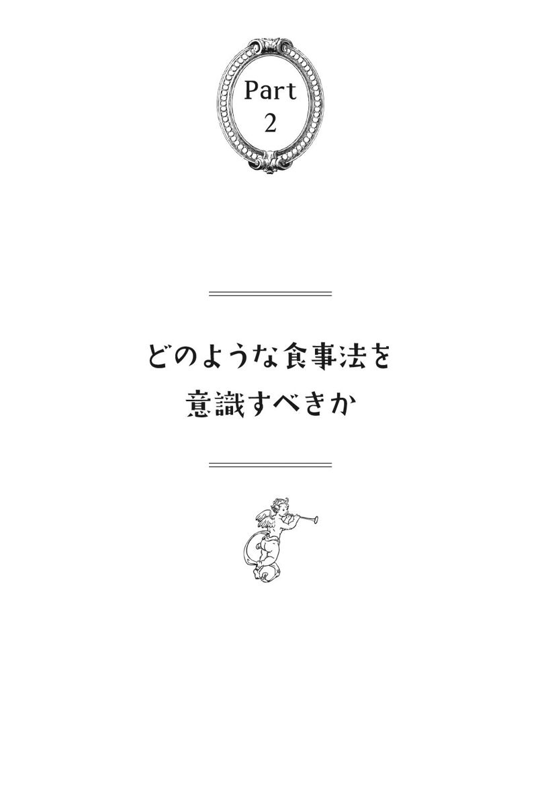
地球上で最も生物を殺しているのは人間である
世の中には多くの食養の研究家がいて、多くの栄養学者がいて、栄養を応用して治療する多くの医学者がいる。そして、そのすべてが「正しい食事法」という言葉を使う。
私は、この言葉を少しでも使った瞬間、すべての人に同じ言葉を投げかかる。それは「バカ」「アホ」というきわめて汚らしい言葉である。もちろん、そこまで言い切るのには当然、理由がある。
私は現在、基本的に雑食である。肉も食べるし、魚も食べるし、玄米も食べるし、野菜も食べるし、海藻も食べる。あまり果実は食べないし、砂糖と甘味料は一切摂らないが、それ以外はあまり気にしていない。
この世には肉食至上主義みたいなものがあり、草食至上主義みたいなものもある。私に言わせれば、これらすべてがバカバカしい。これは、雑食がいいとか悪いとかいうレベルではなく、である。
いわゆるベジタリアンという食べ方は、栄養学的にいうと悪くなりやすいというのは事実であろう。アメリカでも、ベジタリアンは栄養不足になりやすいという勧告が出ている。
「普通の人間」であれば、動物性食品と植物性食品を両方を摂取したほうが栄養は保たれやすい。しかし、ベジタリアンに代表される考え方は、どちらかというと健康よりも生き方の問題であり、肉体よりも精神を重視した考え方になっている。
精神の安定を重視するという立場に立てば、中途半端なベジタリアン（時に草食以外のものを食べる）が比較的多いのも当然であり、私はそれで別にかまわないと思う。
一番「バカ」であり「アホ」であるのは、肉食は体にいいから絶対にこれが正しいとか、草食は体にいいから絶対にこれが正しいとか、自分が正しいと主張したくて仕方のない人間たちだ。
そもそもこの世界で最も生物を殺しているのは、間違いなく人間たちである。地球を一個の生命体にたとえてみれば、人間ほど地球にとってのガン細胞は存在しない。そのガン細胞が地球を浄化したり、地球と共存することを実行せず、こっちが正しい、ボクたちが一番正当などということを主張し続けるのは、滑稽の極みでしかない。
所詮、人間はすべて正当化の権化であり、この世に正しい人間など存在しない。真の意味で正しい理論などなく、人間のやっていることはいつも間違っているのに、これを冷笑せずして何を笑うというのだろうか。
食に対する「正の不存在」
食の話でよく言われるのが、無添加、無農薬、無介入（ホルモン剤や抗生物質などを使わないこと）などの重要性だが、これについては納得しやすい。なぜなら、これらはそもそも人類や動物の歴史上に存在した食べ物ではないからだ。
しかし、一番よいのは本当に無添加、無農薬、無介入の食事をすることなのだろうか？古い民族の食事を真似することが一番なのだろうか？ 日本の和食を重視することが一番なのだろうか？
確かに、現代の食事や食のあり方や古典的な考え方を鑑みれば、かなり良いといえる。しかし、ベストではないかもしれない。
仮にベストがあるとすれば、それは「どんなものを食べても強靭でいられる」とか、あるいは「何も食べなくても生きていくことができる」というレベルではないか。
人間にはそんなこと不可能ではないかと、多くの人がいうだろう。ところが、実際のところ不可能ではない。そうやって生きている人はたくさんいる。
ここでいいたいのは、それらのベストかもしれないものが正しいということではなく、考えれば、より上の正しさやベストな方法がいくつも存在するということだ。さらにいえば、食というものは一理論によって規定されるものではなく、複数の理論や複数の概念が成立するということだ。
すなわち、食に対する「正の不存在」である。しかもこれは食だけでなく、すべてにおいて当てはまるということである。それを、科学的にこちらの食べ方がよい、こちらの食べ方が素晴らしいと主張すること自体のバカらしさを指摘しているのだ。
私はある意味において、菜食主義とか動物愛護の人々が嫌いだ。この世界では人間が殺されまくっているのに、なにのんきなことをいっているのかという意味もあるが、それだけではなく、本質的なところで嫌いな面がある。
菜食主義者に感じる偽善ヒューマニズム
菜食主義には大きく分けて二つあると思う。一つは、動物を食べるのが体に合わないという人々。そしてもう一つは、動物がかわいそうだから食べないという人々だ。私は、前者はかまわないと思っている。簡単にいえば、自分の観念や体の声に素直にしたがっているということだから。
私が嫌いなのは後者だ。
もちろん、私とて動物が不必要に殺されている局面を見て、かわいそうだなと思うことはある。しかし本質が違う。動物を殺したり動物を食べるのがかわいそうだという人間たちは、なぜ植物を殺したり植物を食べるのはかわいそうではないのだ？ まさか、植物には心がないから食べてもいいというのだろうか？
そんな理屈なら、動物たちにも本能だけで心はなく、人間にしか心はないという理屈になるではないか？ 逆にいえば、動物に心があるなら植物に心がないと決めつける理由はなんなのだ。動物を食べることは植物（要するに飼料）の消費が増えるという主張もあるが、こんなバカバカしい話はない。
人間だけでなく、すべての生物は何かを殺して食べる以外に生き残る方法はない。たとえ牧畜であっても、狩猟であっても、草食動物であってもそうである。
しかし菜食主義者は、自分がまるで正義であったり、自分がよいことをしていると錯覚し、動物虐待はダメだと言いながら植物虐待を勧めようとする存在であることを自覚していない。
私は、菜食主義者だけを責めたいのではない。肉食礼賛者にもツッコミどころは満載である。ただ、菜食主義者が自分は慈悲深い存在であるかのように偽善ヒューマニズムが満載であるため、ここでは菜食主義者について書いているに過ぎない。
結局、菜食主義者は、突き詰めていけば自分が満足するための手法でしかない。動物を助けようとする自分に酔っているに過ぎない。
動物はなんとなく表情があり、声を出して死んでいくからかわいそうだが、植物は声をあげないのでかわいそうではないというわけだ。なんという偽善だろう。心の底から吐き気がする。
「いただきます」は命をもらうことへの感謝の言葉
私は動物を食べろといっているわけでも、食べるなといっているわけでもない。どちらでもいい。したがって、動物を食べるのが体に合わないという人々のことは肯定する。
基本的に、生物を食べない限り生きてはいけないのだ（不食の人々については後述する）。それを適当にごまかすなといいたい。
動物はかわいそうだけど、植物はいいじゃんみたいな偽善者になぞ興味もない。本質的なことは、我々人類は何かを殺して食べるしか生きていく道はない。我々人類は地球史上最凶のハンターであり、消費者ということだ。
草食動物は植物をかわいそうだといいながら食べたりはしない。動物を食べるのがかわいそうだからという理由で、草食動物になるのではない。
だから、畜産者でも「生き延びるためには仕方ないじゃん」と割り切っている畜産者のほうがよほどましだ。「うちのかわいい子たちが皆さんに喜んで（食べて）もらえるとうれしい」などとテレビで喋っている畜産業者もいるが、「どんだけ偽善者よ」といいたい。
結局、人間は動物の気持ちも植物の気持ちもわかってはいない。ニンゲンたちの感謝の気持ちも思いやりも、彼らは最高に冷ややかな目で見つめている。
肉食であっても草食であっても最も重要なことは、その食性でなく、自分に合っているかを自分の体に聞くことである。
さらにいえば、人間は自分が食べられる存在であることも自覚することだ。それはつまり、死ぬ時が来たらあまり悪あがきせずにぽっくり死に、寄生虫や細菌に食べられて土に戻るということの重要性である。そうあることで、我々は初めて自然の中で何かを食べることを許される。
「いただきます」という言葉は命をもらうことへの感謝の言葉であり、それは逆説的にいえば、自分たちもいつか何かに命を差し出さねばならないのである。
愚かしい言葉「アセンション」
少し考古学的、歴史学的に考えてみよう。実は人類の歴史において、以前は黄金時代だったが、人間が堕落して暗黒時代になったという神話が世界中にある。
聖書でも、昔は人間が裸で森に住み、フルーツを食べていたことに触れている。この種のテーマは、イヌイット、ネイティブアメリカン、アボリジニ、マヤ人、その他多くの文明で語り継がれている。
また、多くの文明が「ハイヤーセルフ（高次の自分）」のことを語っている。近年は「アセンション（次元上昇などと訳される）」という言葉が流行のようだが、この言葉ほど愚かしいものはない。
私はアセンションという言葉が大嫌いで、せめて日本語でいえよと思うのだが、それ以前に、血のにじむような修行もしてないのに違うレベルに進めるなんて、おこがましいにもほどがあると考えている。
ここでいいたいのは、宇宙を感じたり、三次元を超越する方法がないということではない。霊魂や魂論を持ち出す人々が、あまりに当たり前のようにアセンションという言葉を語る、その愚かさについてである。
今一度、子供の心に戻って考えてみればいい。もしそのような超越の状態や霊性の昇華という状態が存在したとしても、それは物質によって、現代風にいえば何かを買ったり、何かを飲んだり、何かを塗ったり、お金を払ったり、そんな程度のことで到達できるようなものであるわけはない。
そこで私は、アセンションを訴えるすべての人を総称して「アホンション」と呼んでいる。
話がそれてしまったが、古代の神話や伝承を見ると、すべては本質的には同じ問題を記述し、さまざまなテクニックを使って問題を解消しようと試みていたことがはっきりとわかる。
時とともに、状況が進展するにつれて、必然的に神話も慣習も歪められてきたという問題も、もちろんある。今日の我々はそれらをすべて「神話」と片づける傾向にあるが、実際は、神話というよりは歴史を説明した可能性があるのだ。
粗食は健康に寄与する
なぜ、食の本であるにもかかわらずこのような話を書くかというと、食べないで生きるということがこの話につながっているからだ。
この世には、いわゆる「不食の人々」といわれる人々がいる。私は別に人類全員に不食になれといっているわけではない。しかし、単純に健康のヒントとしても、精神面の修行におけるヒントとしても、解毒のヒントとしても、彼らの存在は非常に参考になる。
食べないということは可能だろうか？ 理論上は難しいに決まっているが、実際に食べないで生きている人はこの世にたくさんいる。この現実が理論上破綻するのは、すべて医学や栄養学を信じているからであるが、科学的にまったくわからないわけでもないようだ。
たとえば「不食の人」でネット検索をすれば、いくつもの実例が出てくる。それらの中には国家調査機関が研究した事例がいくつもあり、すべてが眉唾ものではない。ただ、日本人にそれを実行せよといっても無理であり、しかも日本人がやっている不食の多くは、不食ではなく、粗食あるいは小食のレベルでしかない。
ここでいいたいのは、不食でも生きられる＝食べ方に正しさがあること自体が嘘である、ということを示すとともに、日本人はまず粗食について見直せということである。
栄養学的に考えれば、粗食であることは体に悪いことになりかねないが、粗食であることは健康にも寄与するし、結果的には地球に対しても寄与することになる。日本人の多くが粗食になるだけで、スーパーやコンビニで山のように廃棄される食材は減ることになるからだ。
ちなみにベジタリアンで有名なマハトマ・ガンディーは一時フルータリアンだったようだが、その後は以下のような食事を心がけたとされている。
現地で栽培された野菜を食べる
自分の口に入れるものは、自分で調理する
度を越して食べないように、小さなボール皿で食べる
祈りながら食べる
ここでもやはり粗食の考え方が登場している。なお粗食の考え方は、この後に続く各論の部分でもそのまま当てはまっている。
一つ科学的な話をするが、ウィスコンシン大学の報告というものが存在する。
これはアカゲザルを使った食事法の研究だが、70％にカロリー制限したアカゲザルは１００％飽食群に比べて、１・６倍に生存率が長くなり、加齢による病死が３分の１に減り、ガンや心臓病死が半分未満に減り、糖尿病死にいたってはゼロであるという結論であった。
専門家だからといって信じてはいけない
「フードファディズム」という考え方も存在する。これは、食べ物や栄養が健康と病気に与える影響を過大に信じること、科学が立証した事実に関係なく、なんらかの食べ物や栄養が与える影響を過大評価することとされている。つまり、科学が立証したこと以上に、その影響を信じて固執していることをいう。
この考え方は、一面的にはもっともな考え方であるように思える。しかし実は、考え方自体に深い落とし穴があることに、唱えている人たちや信奉している人たちは気づいていないのだ。そしてこれは、栄養学が絶対であるかのように信奉している人にも同じことがいえる。
単純な話からしよう。フードファディズムで例としてあげられているものに、人工甘味料（アスパルテーム他）などがある。要するにアスパルテームが体に悪いというのは科学的根拠がないというわけだ。
まったく愚かしい。アスパルテームの弊害については山ほどの科学的根拠があり、フードファディズムを唱える者たちが何も調べたり、勉強していない無知な連中であることを示しているにほかならない。
遺伝子組み換え食品も同じだ。遺伝子組み換え食品の場合、人体でいうと科学的な結果が出しにくい。なぜなら現在経過中であるからだ。ラットなどでは医学的異常が多数発見されているが、それ自体を、人体に応用することはナンセンスであるということによってごまかしている。
それは、ある意味で正しい。しかし逆にいえば、遺伝子組み換え食品が人体にとって完全に安全であるという、完全なる科学を実践した経歴や証拠は存在しないのだ。ここで欠落しているのは、リスクマネージメントという考え方、そして比較という考え方であり、最後は直感に頼るという考え方である。
リスクマネージメントからいえば、これまで食べていた遺伝子組み換えされていない食品は動物実験でも安全性が高いといわれているし、比較すればそちらを食べたいと思うのは、もはや直感であり人情というものだ。科学ごときの一面のみではなく、複数の側面から考えないと、自分にとってのベストの方法を見つけ出すことは難しい。
そもそも、科学自体が嘘や捏造のオンパレードなのだ。この本は食の本なので詳しくは書かないが、私が所属する医学や製薬の分野ではそれが常識になっている。食の業界の人であれば、同じように食の業界も嘘や捏造のオンパレードであることを知っている。
つまりフードファディズムという概念は、それ自体が一種のバカっぽい科学信仰であり、科学自体の怪しさをまったく直視できていない。どんな科学的論文も必ず人の手が入り、どのような裏事情があるかを理解していないのだ。
本当の意味で、この世に信じるに足る科学などほとんど存在しないということなど、世界の裏側を少しでも見たことがある人なら誰でも知っている。私が人々に言いたいのは、どんな専門家でも信じるなということである。専門家など信じるに足らない。
今起こっている現象（結果）と自分の経験と他人の意見と双方のデータを見比べて、現段階ではどちらが正解に少しでも近いかを見極めよということである。
実はこれは、この章の結論にそのまま当てはまる。肉食と草食の愚行については次章にも続くが、最も重要な考え方は食べ方に正解などないということだ。
あなたは他人と同じ体質を持っているのか？ 他人と同じ遺伝子を持っているのか？あなたは他人と同じ精神性を持っており、同じ心理を持っているのか？ 食に関して栄養素以外の観点を導入してみたか？ 同じ腸内細菌を持っており、同じ細胞波長を持っており、同じ栄養状態であり、同じ育ち方をしてきたとでもいうのだろうか？
もちろん答えは、いうまでもなくすべて違っている。
体の声を聞いて食事を選ぶ
食べ方は健康に直結するものであり、生き方そのものでもある。その食べ方も生き方も、誰かに強制的に決められるものではなく、またあなたが他人に強制する権利もない。
だからこそ、食を考える時は自分で一生懸命勉強すると同時に、常に自分は正しいわけではないことを自覚する必要がある。そのうえで自分の体と精神に最も合うと思われる食事の仕方を選択する。
ここで重要なのは、脳で食事を選ぶのではなく、体の声で食事を選ぶということだ。選択はあなただけの権利であり、仮にその権利を及ぼすことができるとしたら、親子関係くらいしかない。
ただし、その時には科学だけでなく直感も重視することである。あなたの体が動物性食品を避けているなら避ければいいし、そうでないほうが肉体的にも精神的も健康であれば食べればよい。
次章以降に取り扱うが、重要な問題は化学物質が混ぜ込まれる愚行について知ることである。これは選択の問題ではなく、人類の歴史上の食べ物として存在しなかったことが重要なのだ。もともと食べ物でさえないのだ。
添加物を食べることなど、極論すればペットボトルを食べているに等しい。仮に全部避けることができなくても極力避けるということは、選択の問題ではなく、生物としての必然なのである。
肉食が推奨される理由
肉食や原始人食に健康の秘訣があるとする識者は結構多い。しかし現在の日本では、どちらかというと肉食排除で、たとえば医学被害の研究家で、友人でもある船瀬俊介氏などもそうである。
一方、それは健康にはつながらないという説も多数ある。すなわち、肉は必要であるという説で、菜食やフルータリアンの否定につながるかもしれない説だ。
ところで、私は二つの説の整合性をとれた人を、いまだかつて見たことがない。
まず肉食が推奨される理由は、それが良質のアミノ酸であり、しかも必須アミノ酸を摂りやすいという点にある。アミノ酸スコアという言葉が使われるが、これについては自分で調べてほしい。
確かに、肉や魚のほうが大豆などよりスコアは高く、栄養学的には間違ってないといえる。しかし、これについても反論する栄養学者は必ず存在するだろう。もっとも私にとってはどちらでもいいが......。
拙著『医学不要論』にも書いたが、有名な話として、イヌイットの人たちは野菜はほとんど食さず、アザラシや白クマの肉を主食にして生きてきた。それでも長寿を保ち、ガンや心筋梗塞などにほとんどかからなかったという研究がある。
これはこれで事実であり、イヌイットが原住地から西洋文明の中に引っ越して不健康になった証拠も数多いとされている。これもまた事実であり、これだけを見れば肉食が悪いという話につながらなくなってしまう。
また、日本ではアイヌなども熊や鹿の肉を食べていたし、ネイティブアメリカンも鳥や獣の肉を食べていた。あるいは虫などを食する民族もいたようである。そして、55ページに示したネイティブアメリカンの族長の言葉のように、彼らは非常に長寿で健康な人々が多かったとされている。
その一方で、フルータリアンやイモなどで長寿を保っていた人々が存在している。エベレストやチベットに多いと聞いたこともあるが、きちんとした統計をあまり見かけたことはない。それでも私は、別に嘘だとは思っていない。
ただしこれは、肉食で長生きしている人たちを部分的に否定する話である。もちろんここでは、現在、肉や果実の中に含まれている化学物質や、野菜の農薬その他の問題などは論外として扱っている。
ここで愚かな人間たちは、すぐ次のように考える。すなわち、「どっちが正しいのか」ということと、「どっちを自分は用いようかな」ということだ。
このように考えてしまうことは、教育の誤りにその元凶があるが、とにかくこう考えても幸せが訪れることはあまりなさそうなことは、すでに書いたとおりだ。それをこの章では、もう少し掘り下げて書いてみる。
穀物の消化を得意とする日本人の身体特性
よくいわれる話として「肉はスタミナの根源というのは真っ赤なウソだ」というものがある。確かにこれは一面的には正しいが、また偏狭的でもある。
肉は体を酸性（酸毒化、アシドーシス）にし、消化の過程で腸内で毒素を出すことなどに起因し、さまざまな健康障害を引き起こすとされる。成人病や難病やガン、アレルギーの類にいたるまで、食肉と牛乳が原因であるとされている。
それならば、なぜイヌイットやネイティブアメリカンやアイヌたちは、健康でガンにもならず、強靭な肉体であったのかをきちんと説明できなければならない。生食であるとか魚のＥＰＡ（エイコサペンタエン酸）その他が入っていたなどで説明できるとするなら、勘違いもはなはだしい。
彼らが日々体を使っていたというのも説明にならない。肉はスタミナの根源論が嘘であるという話は、現代のスポーツ選手などにも応用できる考え方だからだ。
確かに、もともと日本では１８６８年の明治元年まで肉食は一般的ではなかった。そして、江戸時代の人々のほうが現代人よりスタミナ豊富であったことは、さまざまな著書で語られている（たとえば飛脚の話など）。
このことは「細胞環境デザイン学」（60ページ参照）から考えても重要な要素を占めるといえる。今日にいたる日本文化の礎は、「まごはやさしい」に代表される食文化から培われたものであり、日本人は食生活の中で穀物の消化を得意とする身体特性（欧米人より腸が長いなど）を実際に持っている。
このような日本人の体力の問題、日本人の食性の問題、古典的民族がなぜ強靭な肉体であったかなどを総合的に考えねばならない。
菜食主義、ローフード、ナチュラル・ハイジーン
それでは、菜食主義（ベジタリアン）についてはどうだろうか。ここでは果実主義（フルータリアン）も同じように扱うが、フルータリアンの場合は完全に動物性食品を食べないわけではないようだ。なので、本当ならこれらも厳密に区分けする必要があるのかもしれないが、ページの都合上類似のものとして扱う。
総じてよくいわれる話に、フルータリアンは長寿で健康というのがある。56ページにあげた『フィット・フォー・ライフ』はアメリカで普及しつつある「ローフード」本の代表格である。
ローフードとは、加工されていない生の食材を用いた食品、あるいは食材を極力生で摂取する食生活のことである。ローフード主義者は必ずしもベジタリアンであるとは限らず、生であれば動物の肉やその他の動物性食品を食べる者もいる。
基本的な目的は、加熱によって失われがちな酵素やビタミンやミネラルなどを効率よく摂取することとされる。ただし、酵素が破壊されないとされている摂氏48度以下ならば加熱してもかまわない。
私に言わせれば、これは栄養学的な考え方だけであり、ローフードの利点はもう少し別のところにある。これについては56ページも参照していただきたい。日本の刺身が推奨される理由の一つも、ローフードにあるといえるかもしれない。
また、ローフードは発酵食品を多用するといわれているが、これも私としてはよい考え方であると思われる。
ただ、全体的にはローフードのベジタリアンである場合、栄養不足になりやすいとしてアメリカ国内でも注意が促されており、適切なサプリメント摂取を勧める動きもある。
もう一つ、よく使われる言葉が「ナチュラル・ハイジーン」である。これは自然療法などに基づいた生命理論というような意味になるが、ローフードとナチュラル・ハイジーンは混同されることが多い。この二つがセットで使われやすいのは、ナチュラル・ハイジーンを推奨した結果がローフードだったという結論にいたるためである。
私にいわせれば、このナチュラル・ハイジーンという言葉自体がバカバカしい言葉だが、やはり人類という種族は自分が正しいということを主張したくて仕方がないらしい。
菜食主義は雑食や肉食主義（これも雑食の一種）に比べて栄養不足になりやすいと、よくいわれる。確かに理論上はそうであるかもしれないが、私は菜食主義者でとても健康な人を何人も知っている。このこともまた、栄養だけで説明できるだろうか。
たとえば１個のトマトには、現在知られている範囲だけでも１万種類の植物性栄養物質が含まれている。これはビタミンやミネラルやアミノ酸ごとき存在、つまり栄養だけで説明できるものではない。
ただし、これは草食であっても肉食であっても当てはまる。なぜかというと、仮にどこかに健康な食事法があるとしても、それと相反するような食事の仕方でも健康であることを説明できないからだ。これを説明しようとすると、どうしても栄養学や食養以外の分野にも話が及ぶ。
もちろん、そのような意識がない人に話しても時間の無駄なのでここでは書かないが、「我々は食べたもので作られる」ことさえも真実ではないのではないか。そう考えられることが重要なのである。
菜食主義者の割合は女性のほうが多いように推測するが、不健康で肌の色が悪いというわけでもない。むしろ今風にいう「美容」や「美意識」も高く、活動的な人も多い。はたして彼女らのあり方は栄養不足で説明がつくのだろうか。
一切の毒物を排した形でそれぞれの評価を行うべき
肉食主義は特に栄養学的要素から推奨されているようだが、粗食や不食の説明がいまだになされていない。医学的研究などの反論についても乏しい面がある。
たとえば、有名なのが「マクガバンレポート」と「チャイナスタディ」だ。
マクガバンレポートを簡単に説明すると、人間がかかっている生活習慣病の大部分は高カロリー、高脂肪、高たんぱく、高砂糖、高精白の５高食品であると警告している。肉食は大腸ガンを５倍に増やすなど５０００ページにも及び、その中では健康食として元禄時代以前の日本食を推奨している。
チャイナスタディはアメリカと中国による共同研究で、コリン・キャンベル博士は「動物性たんぱく質こそが史上最悪の発がん物質だった」と結論づけている。たとえばカゼインを20％増やすだけでガン病巣は11倍に増殖する。動物たんぱくの発ガン率は植物たんぱくの８倍に相当するなどと結論づけている。
ここでも、多くの古代民族が肉食でありながら、ガンが少なかったことをしっかり説明してもらわないと困ることになる。
また、これは医学研究だが科学的見地も入っているので、その科学的見地に問題があるかどうかを考えねばならない。
これらの研究では、肉に入っているさまざまな栄養素だけでなく、抗生物質、ホルモン剤などについて、どれくらい考慮がされているだろうか。実は、それらでさえも大きな問題ではない。アメリカ牛などに代表されて使われている肉骨粉などについて検討されているだろうか。
肉骨粉が何か、皆さんはご存じだろうか。これは死んだ動物をミンチにして粉にしたもので、病死した牛や豚などの家畜、死んだ犬、サーカスで死んだ象、スカンク、ネズミ、ヘビなど、あらゆる死体が運ばれてきて処理される。
そして、その肉骨粉を食べているのは牛であり、豚であり、鳥である。つまり、彼らは基本的に共食いをさせられているといってよい。アメリカ牛はこれを基本として商品化されている。
さらにいえば、アメリカでは養鶏のごみでもある糞、要するに養鶏場の床にたまった大量の糞をかき集め、少量の大豆（遺伝子組み換え型）を混ぜ合わせて牛に食べさせている。これについても医学研究では評価されているのだろうか。
つまり初歩的な問題として、肉食が一切の毒物を排した形できちんとした評価が行われているかである。菜食であれば、無農薬というわかりやすい評価の背景があることを忘れてはならない。
現代では養殖の魚なども同じような構図で薬物まみれになっている。天然の魚であっても、日本では放射能に汚染されている。
これらを一切排したうえで、それでも肉食で健康の人々、菜食で健康の人々、その双方を説明できるような理論や概念を示さなければ、人類の知恵とか科学とはいえない。私もそれについては完全な根拠などを示せないが、いくつか仮説として示せるものはある。私が大金持ちであれば、これを証明できるのかもしれないが......。
「人間の遺伝子には草食系と肉食系が存在する」という仮説
仮説の一つは、よくいわれている考え方の「身土不二」であろう。これは、このケースでも部分的には当てはまる。
イヌイットやネイティブアメリカンは熱帯に住むのではないから、当然フルーツなどは摂りにくいし、肉食にならざるを得ない。それに比して動物の狩猟がしにくい地域も存在するし、動物の狩猟は古代の民族にとって危険も大きいので、森などでフルーツが採れるならそれに勝る食物はない。
これらを生命倫理の中で感謝しながら食べていれば、それぞれを満たす栄養学が存在するため、双方とも長生きで健康であるという理屈は当然成立しうるだろう。
これを見てもどちらの理論が正しいということではなく、土地柄や季節や住んでいる人々に合わせて考えることは大事なのかもしれない。
ほかにももう少し細かい仮説を立てることはできる。それらのやや科学的に見える仮説が、結局、身土不二を支持しているのかもしれないし、日本で肉食や菜食を採用している人の健康の結果を支持しているのかもしれない。
その一つは、当然ながら遺伝子や体質的な問題である。人類がみな雑食的な遺伝子や体質しか持っていないというのは、非常に偏狭であるとは思えないだろうか。
これは性格にも関係していると思われるし、どこの遺伝子に違いなどあるのだといわれても、正直私にはわからない。ただこの考え方で研究を進めていけば、ポリシー上の問題ではなく、菜食で栄養不足になる人とならない人の違いも説明できるようになるだろう。動物愛護精神がそれほどなくても、肉を食べるだけで非常に体調が悪くなる人の説明もできるかもしれない。
要するに、人間の遺伝子の中に草食系と肉食系が存在するということである。しかし、そのような科学的研究に少なくとも私はお目にかかったことはない。
ソマチッド、バイオフォトン、量子力学
もう少しわかりやすい話で考えてみよう。たとえば、腸内細菌叢の違いがあげられると思う。
これは、あらゆる人がすべて違うものを持っており、たとえ親子であろうと完全に同一ではあり得ない。この腸内細菌叢の違いは、その人が肉食で健康を保ちやすいのか、菜食で健康を保ちやすいのかを決める一因子である可能性は十分に考えられる。
そのほかに着目してみたいのが「ソマチッド」である。これは20世紀中頃にフランスで確認された未知の生命体で、地球上のすべての生命やあらゆる場に存在し、私たちの生命活動に大きな影響を与えることが近年確認されつつある。
医学的には千島学説などにつながる存在だが、このソマチッドは医学レベルでなく、さまざまな分野で研究が進んでいる。これを非科学的だなどという人はまだまだ多いが、要するに何も知らないからに過ぎない。
このソマチッドはそれぞれの生物に存在する。食べられても消化されても存在し、我々人類の中にももちろん生存している。
このソマチッドという微小レベルの物質から食材を見てみると、肉食であれ菜食であれ、その利点と欠点が見えてくるのは当然のことである。
そして、最先端の医学や生物学では「バイオフォトン（生体光子）」についても研究が進んでいるようだ。これは、我々の人体やあらゆる生命体は非常に微弱な光を発しており、それがエネルギーとして存在しているという研究である。これは非科学でもなんでもなく、最先端の研究に過ぎない。
このフォトンは人体だけでなく、ほかの生物にも存在し、私たち人類の立場からいえば、食べ物にもさまざまな光が存在する。噛み砕いて説明すると、光が豊富であったり、波長が近いものを食べると、自分の体の光も強くなり、いわゆる健康状態に戻る。これは一般人のイメージするところの、まさに「気」や「オーラ」のようではないのか。
このフォトンがなんであるか、光らせている根源的物質がなんなのかは不明だが、もしかしたらソマチッドと関係があるのかもしれないし、あるいはないのかもしれない。
これと関連するものに量子力学がある。量子力学は相対性理論の先を行く物理学理論だが、これは一部が医学にも応用されているようだ。原子や電子が、粒子としての性質と波としての性質を持ち、逆もまた然りというところからその概念は出発している。
それでは、これを食に当てはめるとどうなるであろうか？ 食というのは生命をもらうことであるが、そこにバイオフォトンがあるのと同様に、量子や波があるとは考えられないだろうか？
もちろん、それらの専門家は「ある」と表現している。というより、ソマチッドやバイオフォトンや量子に共通点があると思われないだろうか？ 私は大いにあると思っている。
やや食の話から離れてしまったが、無知な私が知っている現行科学より進んだ考え方によってさえ、いくつもの因子を考えることができる。つまりベジタリアンで健康な人がいることも、肉食主義の古代民族が強い体を持っていたのも、栄養だけでなくこれらの因子の影響を受けているかもしれないのだ。
それらのすべてを説明することができないまま、肉食を推奨する、菜食を推奨するというのは、真の医学、真の科学からいっても滑稽以外のなにものでもない。
皆さんは医学や科学になど頼る必要はないのである。前章でも述べたが、結局、この結論に行き当たるからだ。つまりそれは、「あなたの体の声を素直に聞き入れる」 ということである。
脳の声ではなく、体の声である点が重要なのである。

問題は精製された糖質を摂り過ぎていること
今日の食生活にはさまざまな問題がある。特に栄養学的観点から見ると、大きな問題として糖質過多があるので、この章では糖や甘味料の問題について書きたい。
糖質過多とは文字どおり糖質の過剰摂取という意味で、砂糖や異性化糖（１３２ページ参照）などを含む糖質、特に精製された糖質を摂り過ぎているということだ。
甘味料だけではなく、精製された穀類（白米や小麦粉など）もあまりよろしくない。砂糖とはショ糖（スクロース）が主成分の糖であり、スクロースとはグルコースとフルクトースが結合した二糖類である。
人間が活動するための主たるエネルギーといえば、やはり糖質（炭水化物は単糖類と多糖類に分けられる）であろう。我々の日常的な話なのだから、このこと自体は別に間違っていない。
植物性食品、特に根菜類（にんじんなど）には糖分が多く含まれているが、日本人は根菜も食べるし、イモ類も食べるし、コメも食べるため、砂糖がなくても糖質過多になりやすい環境にあるといえる。
三大栄養素といえば糖質、脂質、たんぱく質のことだが、体を作る主な栄養素はたんぱく質と脂質だ。エネルギー源は基本が糖質であり、脂肪はそのあとに使われることになる。
ここまで書くと、糖の何が問題なのだろうと思うかもしれない。しかし、あらゆる砂糖やブドウ糖（グルコース）は避ける必要がある。砂糖の代わりになる甘味料、たとえばサトウキビ糖、糖蜜、果糖（フルクトース）、コーンシロップ（ＨＦＣＳ等）なども避ける必要がある。
砂糖を摂ると血糖が上昇するが、その結果、インスリンが放出されるようになり、インスリン放出の山（インスリンスパイク）が発生する。このインスリンスパイクは体のいたるところを不健康にする。
インスリンが生成され過ぎると病気になり、体はインスリンへの抵抗力（インスリン耐性）を備えるようになる。そしてインスリン耐性は、インスリンの効果を次第に効きにくくするという弊害がある。
「間接糖」を摂ることが大事
体で使われる糖分は必要なのだが、それは体内で分解され、分解されて初めて糖になる「間接糖」であることが、健康を保つうえでは重要となる。すぐに血糖値が上がってしまう「直接糖」は体には非常に有害である。だからこそ、砂糖は避けねばならないのだ。
白米がダメな理由も、第一にはここにある。ホールフード、すなわち「自然のまま丸ごと食べること」が推奨される理由も同様だ。玄米などが推奨される理由の一つもここにある。
これを示す端的な指標の一つがGI値である。GI値とはブドウ糖の吸収と血糖上昇を１００とした場合、他の食材がどれくらい血糖を上昇させるかを示したものだ。糖の弊害を考えれば、GI値が低いものが推奨されるわけだが、低ければなんでもいいわけではないことに、食材の難しさがあるともいえよう。
ちなみに白米は83、食パンは90、じゃがいもは89、ラーメンは72くらいの数字になっている。野菜は比較的低いものが多いが、なかには高いものもある。
意外なのが果物で、バナナでさえ54、イチゴは29、みかんも30とかなり低い。ただ現在売られている果物は、品種改悪により糖度が上げられているものが多いので注意する必要がある。肉も比較的数字は低く総じて50以下で、魚も同様に50以下となっている。
糖について書く時は、ムコ多糖類についてもふれなければならない。拙著「医学不要論」から一部抜粋する。多糖類とは糖がたくさんつながったものの総称で、ムコは「ねばねば」などの意味を表す。いわゆる納豆やオクラや山芋などの類は、ムコ多糖類に属すると考えてよい。
ムコ多糖類にはさまざまな効用があるとされるが、免疫力、血糖値調節、新陳代謝などだけでなく、骨の形成促進、水分媒介による組織への栄養供給なども行っている。これらは、いわゆる難病の治療にも役立つ可能性がある。
ムコ多糖類は食品でいうと、アンコウ、ドジョウ、ウナギ、ナマコ、すっぽんなどのヌルヌル系、カレイ、ヒラメ、アワビ、カキ、魚の目玉のまわり、フカヒレ、ツバメの巣、そして玄米や豆類などにも多く含まれている。アロエにも多い。ただし、いわゆるコラーゲンだけをせっせと摂っても関節には役にたたない。
糖質依存という問題
ここで疑問を持つ人がいるかもしれない。糖はよくないと、いつも書いているではないかと。
もちろん、それは間違っていない。しかし、糖は人体において実際に活用されている物質であり、必要な物質であることも間違いない事実なのだ。つまり、糖が全部悪ということではなく、食べ方や食材の選び方の問題と吸収率の低さが重要であるということにいきあたる。
実は、フルータリアンがよいといわれる理由の一つがここにある。
フルーツには通常、果糖が入っており、果糖は砂糖よりもさらに甘くて弊害が大きい。それなのにフルーツが体にいいのは、果糖自体はそれほど多く含まれていないこと、フルーツを丸ごと食べると食物繊維なども摂れるために糖の吸収をゆっくりにしてくれること、さらには本物のフルーツであればビタミンやミネラルも豊富に入っているからである。
栄養学で説明するとつまらなくなってしまうが、フルーツがいいということにもそれなりの理由があるのだ。
私は精神薬依存の問題から医原病や薬害問題に気づいたため、依存症については比較的うるさいほうだが、糖は糖質依存を起こすことも知っておくべきである。
糖質依存は身体的依存のみならず、精神的依存も引き起こす。甘いものを摂ると、おいしいと感じるだけでなく、心地よいと感じる。これは極論すると、覚せい剤で気持ちよくなっているのに似ている。女性が甘いものを食べると安心するというのは、まさにこれである。
しかし現実は、その糖分が切れてくるとまた精神的には不安定になってくる。このメカニズムはドーパミン報酬系によるというのが現行の科学の仮説だが、そのような仮説は、ここではどうでもいいだろう。甘いものに依存している人が多数いるのは事実だから、それ以上でもそれ以下でもない。
だからこそ、精製された糖は危険なのだ。まさに甘いものを食べれば心も体もアマクなるのだ。
最近は砂糖だけでなく、さらに危険な糖が出回っている。それが「異性化糖」や「異性化液糖」である。
「異性化」というのは化学用語で、ほとんどはブドウ糖を果糖に転換（異性化）させられたものをいう。この異性化糖としての果糖は、果物の果糖と同じとみなすには無理がある猛毒だ。
同じ果糖であっても、直接糖か間接糖かの違いは大きい。そしてそれ以上に、現行の異性化糖のほとんどが遺伝子組み換え食品から作られていることが問題なのだ。
医学的にだけいえば、実は果糖のほうがブドウ糖や砂糖よりもはるかに有害ということがわかっている。
人工甘味料をヤバいと思えるか
糖（特に直接糖）が体に悪いのはわかったが、では人工甘味料はどうだろうか。有名なのはアスパルテームだが、この甘味料ほどに歴史上論争を呼んでいる食品添加物はない。同時に、数ある人工甘味料の中でも断トツに世界で一番普及している。
最近こそスクラロースが増えてきた印象があるが、やはり人工甘味料といえば、まずはアスパルテームなのだ。
現在、この人工甘味料アスパルテームは世界１２０か国で認可され、これが使用された食品・医薬品・ダイエット食品などは、全世界で１万品目を超えるほど普及しているそうだ。
日本では１９８３年に厚生省に食品添加物として認可され、その使用品目は年々増え続けているらしい。ただ、食品業界は刻一刻と変化しているのですべてを知ることはできない。
アスパルテームの問題は、ネットを検索すればすぐに見つかるくらい社会的な問題となっているが、まだまだ日本人の認知度は浅いといわざるを得ない。
アスパルテームの問題が取り上げられるようになり、多くの企業が早急にほかの人工甘味料に切り換えなければいけない状況に追い込まれるなか、２０００年から急激に売り上げを伸ばしている人工甘味料がスクラロースだ。
スクラロースはスプレンダという人工甘味料としても販売されている。コンビニなどで販売されているほとんどの商品には、アスパルテームかスクラロースが入っている。ダイエットコーラなどはスクラロースのほうが多いだろう。
これは、化学を勉強した人には分子を見れば毒とわかる分子式を持ち、一つの文子式の中に三個の塩素分子が入っている。塩素は毒性が強いものが多く、炭素と塩素が結びつくとさらに毒性が増しやすい。
塩素の分子と炭素（Carbon＝Ｃ）の分子をくっつけるとオルガノクロライド（Organochloride）という分子になる。一般的によく知られるオルガノクロライドは、ダイオキシン、ＰＣＢ、ＤＤＴ（毒性が強く、多くの国で使用を禁止されている農薬）である。人間が摂取してもよいという許可が下りたオルガノクロライドはスクラロースが初めてで、ただ一つである。
スクラロースには、人間が摂取しても安全だというデータが非常に少ない。妊娠中、お年寄り、子供が摂取して安全だというデータも一切ないが、お構いなしで売られているようだ。
健康な人が摂取し続けた研究結果の例は少ないようで、仮にあっても、この組成式で健康だなどという研究があれば、またまた科学の嘘であるといわざるを得ない代物である。
ＦＤＡ（アメリカ食品医薬品局）やＥＵが一部、安全性を喧伝しているようだが、食の裏について知っている人々はＦＤＡこそが最もヤバいことを知っている。
そもそもスクラロースは砂糖の６００倍という甘味であり、これをヤバいと思うかうれしいと思うかで、その後の健康は大きく分かれるだろう。
病気と死に向かわせる人工甘味料
昨今は某大手清涼飲料メーカーの商品が「トクホ（特定保健用食品）」として扱われている。まさに末期的状況だが、もともとトクホなどというものは健康とはなんの関係もなく、金を積めば取得することができる看板に過ぎない。
現在、ゼロコーラなどにはアスパルテームやスクラロースやアセスルファムカリウムが入っている。トクホが健康維持に役立つ食品をさしているなら、それらの人工甘味料を毎日欠かさず飲めば健康ということになるが、実際は病気と死に向かって進むのだ。
食べるもので人格まで変わるとする報告や書籍は多数存在するが、確かに糖分は以下のように行動に重要な影響を及ぼすかもしれない。
アメリカのジョーゼフ・ワイドラ博士は、殺人、サディズム、放火、重大な交通法規違反、手足切断などの残虐行為、暴力的攻撃性などの犯罪行為がなされた時、血糖異常の状態にあったことは疑い得ないと報告している。
アメリカの上院栄養特別委員会で証言したリード女史（オハイオ州地裁首席保護観察官）は、自ら取り扱った１０６人の犯罪者を調査し、血糖異常（多くは低血糖）が多かったことを報告している。
玄米と白米の違い
玄米と白米の違いについても書いておこう。
昨今、玄米の重要性が叫ばれるようになっているが、それは玄米に放射性物質（セシウム、ストロンチウム等）を中和し、解毒効果があるためだろう。また、玄米に含まれるイノシトール、γオリザノールは肝臓の働きを強める効果があり、この点でも解毒効果が高められる。そして、アルカリ性食品であることも重要だ。
玄米は生物毒を持っている。もっとも植物の種なのだから、簡単に虫などに食べられないような工夫があるのは当たり前だ。生物毒というか、身を守るために活躍している因子がフィチン酸やアブシジン酸である。これらは実際、立派な生体毒だ。実はこのことが、発芽玄米のほうが体によいという話につながってくる。
つまり、水にさらされて芽を出そうとすることによりフィチン酸は変化し、毒性が薄れるという理屈である。これは部分的には正しいと思うが、一説によると、これ自体が間違いであるという話もある。
発芽により解毒されるのは一部分であり、しかも問題の根幹はこれではなく、フィチン酸とフィチンの差が理解できていないことという考え方だ。前者はミネラルを奪うが、後者はすでに結合状態であり、体内からミネラルを奪ったりはしない。
玄米だから必ずいいとは限らない。玄米がいい理由は糖分の吸収がゆっくりであることはすでに述べたが、もう一つは栄養素が豊富であることだ。
また、古代の玄米には農薬などが加味されていないが、現代のコメには農薬が含まれやすくなっている。これも当然指摘されるべきで、この点をクリアしなければ現代の玄米がいいと一概にはいえなくなる。さらに昨今は放射能の問題がある。
実は、玄米は放射能もコメの中に溜め込みやすいという性質があり、玄米で栄養素を摂りながら、放射能も同時に摂っているという皮肉が、現在の日本では成立しかねない状況なのである。
玄米自体には多くの栄養素（イノシトール、γオリザノールなど）が含まれているが、それに引き替え白米は粕の言葉どおり、多くの栄養素が欠乏している。糖吸収の問題点においても玄米のほうがはるかに勝る。
放射能防御のレシピについてはChapter16を参照いただきたいが、さまざまなことを加味して考えなければ、この世界で自分や子供の健康を守ることは難しい。
昔から白米常食は脚気になることが知られていたが、これも栄養不足をもたらすという結果を示している。白米常食の危険性は昔から幾度も取り上げられており、約85年前に始まったマクロビオティックは、玄米菜食を日本人の〝正食〟として推奨している。私は、マクロビオティックもまたすべて正しいなどとはいわないが、この点に関しては間違っていないと思われる。
「きれいな飽和脂肪」は積極的に摂取すべき
油脂は、水とともに生きていくうえで欠かせないものだ。健康や医学に関していえば、コレステロール、中性脂肪、ホルモンなどは油脂と密接な関係がある。さらにいえば、皮下脂肪や内臓脂肪だけでなく、神経細胞や神経組織、細胞膜にいたるまで油脂が基本となって構成されている。
脂質に数種あることは述べたが、最も普遍的な脂肪酸には飽和脂肪酸と不飽和脂肪酸がある。現代では、飽和脂肪酸を避けることが基本的な健康法と認識されているようだ。しかし、本当にそれが正しいかは一考の余地がある。
トランス脂肪酸は健康にまったく寄与しない
トランス脂肪酸は今、海外で最も危険視されている脂肪酸である。しかし、日本人でそれに気づいている人は、まだわずかしかいない。
トランス脂肪酸は不飽和脂肪酸を加熱し、水分を蒸発させ、脂肪酸を凝固させたものである。そのうえで脂肪酸に水素分子が加えてある。この不自然な水素添加プロセスで脂肪酸の化学構造が変化する。
こうした脂肪酸は人工のもので、自然には存在しない。このような加工をする一番の理由は、保存面で長持ちするからだ。トランス脂肪酸の代表格が「マーガリン」であり「ショートニング」である。これらはプラスチックとほとんど変わらない構造をしており、食べ物と呼ぶことはとうてい不可能である。
動物性の飽和脂肪酸は健康に寄与する可能性が十分あるが、このトランス脂肪酸という不自然な脂肪酸は健康に寄与する可能性はまったくないといっていい。
これまで提示してきたテーマにも符合するが、どんな食べ物に飽和脂肪酸が含まれているのかというと、肉や酪農製品、植物ではココナッツ油などである。人類は歴史上ずっと飽和脂肪酸を食べてきており、古代の人々たちのほうが現代人よりも、病気にはならなかった。動物性脂肪の是非を問う時にも、必ず古典的な民族の健康度の話が出てくる。
油は避けるものではなく、積極的に摂取すべきものなのだ。もちろんその時には「きれいな飽和脂肪酸」という条件がつく。
もともと植物性の油は不飽和脂肪酸のものが大半であり、高熱になると化学反応により変化しやすい。そのためドレッシングなどにアマニ油、エゴマ油、オリーブ油などが用いられてきたわけだ。
それに比して動物性脂肪は熱にも耐えやすく、現代人の食べ方を考えれば、動物性脂肪の有用性を見直しても損はない。ただ、繰り返すようだがそこには条件がある。現代の動物性脂肪には畜産の肉を含めて、添加物や毒性物質がてんこもりで入っている。それらを考えずして、いい動物性脂肪を摂取することはできない。
トランス脂肪酸の見つけ方
ここからは具体的な話に入っていく。
たとえば、スーパーやコンビニやデパートで売られている一般的なサラダオイルや調理用オイルなどは、リスクが高い油の代表格といえる。
サラダオイルなどは大豆油や菜種油、綿実油やコーン油、ごま油やオリーブ油などを混ぜ合わせて抽出加熱処理をして作られるが、精製時に油の分子構造がトランス脂肪酸に変化してしまっているものばかりなのだ。そして、先進国でトランス脂肪酸の表示義務がないのは日本だけである。
当然のことながら、原材料にもともと含まれている有用な物質などは消えてしまい、さまざまな添加物が混入されて製品化されている。欧米では酸化防止剤のＢＨＡなどは危険極まりない発ガン性のため規制対象となっているが、日本ではまだまだサラダオイルに混入されている。
キャノーラ油などは原材料に遺伝子組み換え食品が多く、こちらも危険な油の代表格である。また、菜種は農薬や化学肥料を使用して栽培されたものも多いとされ、残留農薬のリスクが常につきまとう。
食品を買う時、どうやってトランス脂肪酸を見つければよいか？ 基本はラベルを見ることである。水素化油脂（もしくは植物性油脂）を探せばよい。今日の食品にはほとんど含まれており、我々がトランス脂肪酸に汚染されていることがよくわかるはずだ。
アメリカで有用な医療情報を提供しているジョーゼフ・マーコラ博士はココナッツ油を勧めている。彼の記事を要約して引用すると（翻訳・為清勝彦氏）、多くの食品を炒めたり揚げたりせずに生で食べることの重要性、加工されていない食品の重要性、そして油を使う際は調理に使う油の選択について述べている。
彼がココナッツ油を推薦する理由は、不飽和脂肪酸をそれほど含まないため、他の油のように熱によって損傷を受けてトランス脂肪酸を生成したりしないからだ。
オリーブオイルの問題
オリーブオイルに関しても有用な情報がある。拙著『医者とおかんの「社会毒」研究』にも引用した市民ジャーナリストのポール・ファッサ氏の話を、ここでも要約して掲載することにしよう。
彼は、低温圧搾のエキストラバージン・オリーブオイルと表示されたオリーブオイルであれば、最高級のサラダオイルとみなが思うだろうが、それは危険な発想であると述べている。
イタリア産なら安心と思っている人も日本には多いが、これも同様に危険な発想である。過去20年間、オリーブオイル業界ではいくつかの詐欺事件が発生しているが、彼は「エキストラバージン・オリーブオイル」と表示されているものの大半は、実はそうではないことを告発している。
実際のところ、多くのオリーブオイルには添加物が混ぜ込まれており、それによりオリーブオイルの健康効果は打ち消され、水素添加加工されたオイルの毒性が問題になっているというのだ。まさにこれは、ここまで書いてきたことの延長である。
安売りのスーパーで「エキストラ・バージン」とか「バージン」と表示されているものは、そのような詐欺的商品の見本のようなものだと告発している。
純粋な高級オリーブオイルの場合、オリーブは機械ではなく手で摘まれるし、低温で圧搾してオイルを抽出する必要がある。抽出されたオイルは、色のついたビンかステンレスの缶で保存しなければならない。実際、本当に質がいいオリーブオイルは、日本でも色つきのガラスビンに保存されているはずだ。プラスチック容器はオイルが容器の化学物質を吸い込んでしまうため危険なのだ。
そうしたオリーブオイルは正直なところ、値段も高くなる。ただし、安いオイルを大量に使ってそのあと病院でお金を使うより、ほんの少しましな食材にお金をかけるほうが最終的には出費を抑えられることになる。
「偽装ネギトロ」の存在
油脂の応用問題としてよく取り上げ、拙著『医者とおかんの「社会毒」研究』でも記載したのが「ネギトロ」である。安い回転寿司屋さんやスーパーの食品売り場で見かけるネギトロだが、あれは本当にろくな食べ物ではなく、とんでもない油が混入されている。「偽装ネギトロ」という言葉が使われるくらいである。
本来はマグロの中落ちや皮についている脂身、トロ身を包丁で細かくしたものにネギを加えて作られるのだが、偽装ネギトロは潰した養殖マグロなどの安価な赤身に、植物性油脂（トランス脂肪酸）やアミノ酸調味料（グルタミン酸ナトリウムなど）を添加することで、擬似的に作られている。
主に使われるのはショートニングで、業務用の食品店では食品添加物のグルタミン酸ナトリウムやグリシンなどの調味料、pH安定剤や乳化剤のあらかじめ配合されたネギトロ用ショートニングが販売されている。
安い寿司屋や居酒屋などではよく使われており、もちろん非常に体に悪い。それを食べたいと思うかどうかは各人の自由であるが、日本人には喜んで食べている人が多い。
このように油の選び方は健康に直結する。残念ながら、現代人は「カスの油」ばかりを喜んで摂っているといわざるを得ない状況である。
サプリメントの使用に科学的な根拠がないわけではない
現代は昔と異なり、物質文明の影響で環境汚染や食材の汚染が進んでいる。その影響で食材は汚染されているだけでなく、栄養素が欠乏し、健康面ではますます有害な存在となっている。
その中で着目されているのが、いわゆるサプリメントであろう。健康食品などを含めると正確な数はわからないが、３分の１から半分くらいの日本人が服用しているのではないだろうか。
欧米型の食事に偏り、栄養素の隠れ欠乏者（日本人はほぼ全員が栄養素欠乏である）が増え、不健康な人間が増えている現代では、薬のような重篤な副作用がないサプリメントは好ましいもののように思える。
食業界のことをよく理解しているサプリメント論者の基本的な論調は、「現代の食材は危険すぎるし栄養不足なので、サプリメントで補充するのはやむを得ない」となっている。
健康になりたいといって、あれもこれもと次々に摂る人がよくいるが、これは愚かしいとしかいいようがない行為である。実際、不安につけ込んで、高額のサプリメントを長期的に売りつける業者も多数存在している。
もちろん、サプリメントの使用に科学的な根拠がないわけではない。ただの思い込み効果だという人がいれば、それは単に無知の代名詞であると思っていただいて結構だ。サプリメントの栄養学的な科学的研究はかなり進んでおり、思い込み効果というようなレベルで語られるものではない。
特に医学者は世界で最も愚かな職業なので、大学でも医者になってからも、栄養学などろくに勉強したことはない。したがって、栄養の問題については端から否定することしか頭にない。
私がChapter５などで書いたのは、栄養学に固執する危険性についてであって、決して栄養学そのものを否定しているわけではない。
栄養素を早急に補うことに威力を発揮する
この章では、サプリメントの利点と問題点について検討する。
サプリメントの使用は慎重に進めることが望ましい。サプリメントだからといって安心してよい代物ではない。しかもサプリメントが必要以上に普及することは、この世界にとっても人類にとっても好ましくない出来事である。現在の人類は「その場しのぎ」しか考えておらず、サプリメントも多分にそのような概念を含んでいるからだ。
サプリメントの利点としてまずあげられるのは、栄養補助の言葉どおり、主たる栄養素を摂取することができる点である。「栄養療法」という言葉があり、私が行っている治療の中でも栄養療法は基本的な方針の一つになっている。
しかし、すべての問題が栄養療法で補えるほど甘くはないのもまた事実である。栄養療法は多分に医学的な意味合いを持っているので、その中ではサプリメントは一種の「薬」と見立てることができる。
多くの日本人は、医者に処方してもらって飲んでいる「処方ヤク」を「薬」だと思っているが、これは大きな間違いである。医者が使う「処方ヤク」はすべて猛毒であり、その９割以上は一切価値がないと断言できる。
それに比して副作用が少ないサプリメントは、人々が普通にイメージする「薬」の概念に近いものがあり、使いようによっては「薬」となり、また使いようによっては「毒」ともなる。
栄養療法での治療は、基本的に「食生活の根本的改善」に尽きるが、大きく欠乏した栄養素を早急に補うのにサプリメントは威力を発揮する。
ただし、サプリメントだけで健康が手に入ったり、病気が治ったりするわけではない。精神面の修行や解毒のアプローチを含めて総合的に考えなければ、健康というものは手に入りにくい。古代の民族たちはサプリメントなど飲んでいなかったが、長寿の人が多く肉体も我々より強靭であったのだ。
自然にいそしみ、時間に余裕のある生活を送っていた古代と比べ、現代は昔より栄養素などを要求されるようになっているといえるのかもしれない。
そこで、サプリメントの弊害までをすべて理解したうえで、自分でよく調べて選択する部分においては、サプリメントを許容することはできるだろう。
しかし、やはり基本は食の改善である。さらにいえば、この世に流通する食材そのものを根底から変更することである。
もちろん、これは大企業などの利権があって難しいが、人類がこの先も存続していくためには、根底から変える必要があることはいうまでもない。これが不可能かもしれない現状の中では、サプリメントに頼ることも一つの対症療法であるが、人類の食や生活そのものが切り替わることこそを切望したい。
汚染物質への対応策
現代はさまざまな汚染物質（放射能を含めて）にまみれているが、その汚染物質の多くは過剰なフリーラジカル（活性酸素）を発生させ、健康を損なうことが知られている。
活性酸素を減らすためには抗酸化栄養素が必要だが、これも現在の食材から摂るのは困難な状況といえるかもしれない。放射能はいまだに垂れ流しで、食材はますます虚弱となっているからだ。
したがって汚染物質への対策は、できるだけ摂取しないようにするとともに、解毒・排泄の考え方を用いなればならない。解毒のための栄養素を摂ることもその一つであり、そのためのサプリメントも存在する。
もちろん、サプリメント以上に解毒法（汗を出す、断食、便や尿をよく出すことなど、解毒機能を持つ食材の摂取）を実践することが必要だろう。
腸内環境を整えることも重要である。これは、いわゆる腸内細菌がいかなる状況になっているかであり、現代人は非常に悪玉菌が多いことが指摘されている。腸内環境が悪くて常に便秘をしているような人は、サプリメントを飲んでもほとんど無駄であろう。
現代の健康食品はそれらを考慮して、菌製剤などを混入しているものも見られる。これについては理解することはできるが、やはり安易にこれらに頼ることなく、発酵食品そのものを見直して食べるようにしなければならない。
懐疑的な目線を持つことの重要性
サプリメントブームの現在では、サプリメントをめぐってさまざまな見解が入り乱れている。また、誇大広告が目立ち、医療産業と同じような構図をたどっている。これは非常に悪しきことであり、ゆゆしき事態であると私は思う。
結局、この分野もまたビジネスに過ぎないわけで、この考えに嘘偽りなく反論できた人を私は知らない。その意味で、利用する人々はサプリメントに対して常に懐疑的な目線を持ち、真に利用する価値があるかを検討して選択しなければならない。そのような視点を持っていれば、有効に活用することはできるだろう。
健康とは食や栄養素などだけでなく、運動や精神的影響が強く関係していることを忘れてはならない。
以下は医学書にも掲載されている代表的な過剰摂取の問題である。
ビタミンＡ過剰症：皮膚乾燥、無気力、眼球乾燥、食欲不振、吐き気、脱毛、肝脾腫大、四肢長管骨の有痛性腫脹、頭痛、悪寒、関節痛、口唇炎など
ビタミンＤ過剰症：高カルシウム血症、腎障害（多尿）、石灰沈着、悪心、嘔吐、 食欲不振など
ビタミンＫ過剰症：溶血性貧血、核黄疸、高ビリルビン血症など
近頃の健康志向で、コラーゲン入りゼリーやアロエ入りヨーグルト、コエンザイムアイスクリームなどが出回っているが、これらの嗜好品は体にとってあまり役に立たない。
たとえば、コラーゲンは体に吸収され、一旦アミノ酸に分解され、改めて体に必要なものに組み立てられるので、コラーゲンになるわけではない。アロエも食感を楽しむ程度しか入っておらず、コエンザイムにいたっては補酵素だけを摂ったからといって意味はない。
しかし人々は、そのようなものを食べれば健康になれると勘違いしているようだ。
サプリメントを単剤で摂るのは愚かな行為
サプリメントは単剤（たとえばビタミンＣだけなど）で摂ることは、だいたいにおいて愚かしいことが多い。単体の栄養素を摂ってもうまく働かないことが多いからだ。もちろんサプリだけで栄養素を摂っているわけではないので、一概にそういえるわけではないが、基本としては組み合わせを考えて飲む必要がある。
たとえば、ビタミンＡはたんぱく質との相性がよいこと、ビタミンＢ１はマグネシウムやナトリウムと相性がいいこと、ビタミンＢ２とＢ６は相性がよく、一緒に摂るといいこと、ビタミンＢ12と葉酸は相性がいいこと、ビタミンＡとＣとＥは相性がいいこと、カルシウムとビタミンＤの関係性、カルシウムとマグネシウムの吸収は１：１を目標とすること（昔は２：１とされた）、鉄分とビタミンＣは吸収率を高めることなど、あげるときりがなくなる。
基本は、単一のものだけ多く摂っても栄養はうまく働かないということで、いわゆる生命の輪の考え方は、この点においても妥当性を持っている。
食品系サプリメントと抽出系サプリメント
サプリメントには、大きく分けて「食品系サプリメント」と「抽出系サプリメント」がある。前者はいわゆる健康食品であり、後者はいわゆるサプリメントになるであろうか。
基本的に前者のほうが多種多様な栄養成分を含み、ホールフードに近い感覚なので望ましいように思えるが、そうとばかりも言いきれない。
多くの健康産業では、こうした食品系サプリメントを売り出す時も、「これ一つだけ摂れば病気が治る」というような過大広告がなされるが、その広告自体に問題があるといえよう。
仮にそれ一つだけで病気が治ったり、不調が治るのであれば、それはある意味において非常な劇薬であるととらえることができる。日々の食事や運動や心がけなどを見直さずして、食品系サプリメントだけでよくなるなど、子供が考えても愚の骨頂でしかない。
抽出系サプリメントとは、食材・食品の中から特定の栄養素を分離・抽出したものである。その特徴は栄養素を高濃度に含んでいるが、自然に近いという点では食品系サプリメントには及ばない。
抽出系サプリメントの多くが工場で大量生産されるため、たとえ自然抽出であっても純然たる自然物質とは異なる物質になっている。言葉を換えれば、純然たる栄養素かもしれないが、そこに生命は宿っていないともいえる。
しかし、大量生産しやすいこともあるし、高濃度に摂る必要がある時には一定の価値があるといえよう。当院でも食品系サプリメント、抽出系サプリメントはそれぞれ扱っている。また放射能などの汚染も考慮し、海外原産の「藻系食材（ＡＦＡやスピルリナ）」なども扱っている。
サプリメントを使うにしても、どのような特徴、どのような利点と欠点があるのかを、常に自分で調べて考える癖を持っていただきたいものである。
※４ ＡＦＡ：ブルーグリーンアルジー
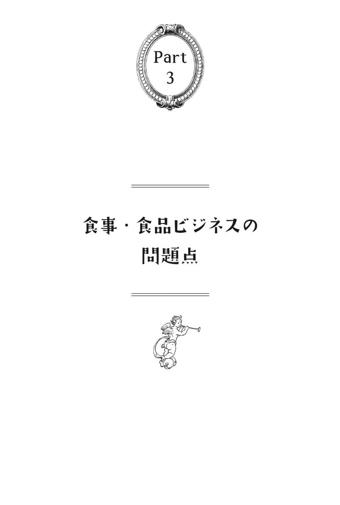
アメリカ産の牛肉が意外に柔らかい理由
薬であるホルモン剤や抗生物質に関しては、食品の中にこれらが大量に混入されていることも問題となっている。
これらが混入されているものの代表格が、畜産や養殖によって生成される食材である。具体的にいえば肉、養殖の魚、卵、牛乳などになる。この章ではそれぞれについて問題点を検討し、こうした物質を避けるにはどうすべきかを考えてみる。
まず評判が悪いのが肉である。肉の評判が悪いことには、当然ながら理由がある。市販の肉はかなり健康に有害な可能性があり、アメリカでは屠殺のおよそ１００日前や飼料場に入れる前に、牛に性ホルモンを注入することが知られている。
天然もしくは合成の性ホルモンを牛の耳の皮膚の下に挿入するが、その目的は金銭的なものである。肉の重量が増えるため、わずかな追加費用で約10％の利益アップになるそうだ。
そのため、ほとんどの市販の肉にはきわめて高いレベルの性ホルモンが含まれているが、きちんとした表示がなされていることはないといっていい。特にアメリカの牛はこの濃度が高いことが指摘されているが、ほかの国の牛であれば大丈夫ともいい切れない。
これらの肉を食べ続けることでガンが増えるのではないかという研究は、数多く存在する。肉については１０９ページも参照にしていただきたい。
焼肉食べ放題のお店で出される牛肉などは、アメリカからの輸入牛肉が多い。その割には柔らかいとかおいしいと思ったことはないだろうか。
霜降りの度合いが多いほど高級だと思っている私たち日本人は、本来アメリカ牛の赤身系は好きではないのであろうが、その割に日本人好みで柔らかい肉になるのには当然ながら理由がある。
『食品のカラクリ』（別冊宝島編集部編）から要約して抜粋しよう。
「タンパク質分解酵素を含んだ薬を赤身の牛肉にふりかければ、やわらかく舌触りのよい肉に変身する。植物起源蛋白分解酵素製剤と呼ばれるプロテアーゼを主成分としたものを使うのだ。しかも商品パンフレットには、使用しても食品添加物ではないから、表示の必要はないと丁寧に書かれている。
もう一つの方法としては、赤身の牛肉の中に和牛の脂肪を注入し、牛乳で固めるという荒業もある。食品加工技術の進歩と言えば聞こえはいいが、要は、いかに安い原料の付加価値を高め、値を上げて儲けるための技術にしか過ぎない」
ごまかしや嘘が通用する食品表示
焼き肉屋さんで人気メニューの一つにタンがあるが、実は牛の扁桃はＥＵ医薬品審査庁の出している「ＢＳＥ感染の部位別危険度」によると、「脳、脊髄、目」の高度感染グループに次ぐグループに入っている。
ＢＳＥは肉骨粉を使用するほどに頻度が増すともいわれているが、この肉骨粉を使用している代表格がアメリカ牛なのである。現在の畜産肉には、このような意味でも危険が潜んでいる。
加工食品の肉は、さらに危ない。有名なのがチキンマックナゲットだが、中国産の薬漬けにされた病気鶏肉を使っているということは、ニュースでも大体的に報道された。河南省の大用食品グループという、日本にも鶏肉加工品を輸出している企業が病気鶏肉を食品に転用した疑惑が報じられている。
中国山東省の山東六和集団という企業グループの契約養鶏家へのインタビューでは、毎日二回、抗生物質をえさに混ぜて投与しているが、耐性が出るのを防ぐために18種類の抗生物質を常に変更して与えているという。不自然な育成法についていけずに死ぬ鶏も多いとされている。
なぜこのようなことが繰り返されるのか。その理由の一つとして、間違いなく消費者が「アホ」であり「騙されたがっている」ということがあげられる。このように危険な利益追求のみの食品を提供されていながら、大きな反発や抗議が行われないからだ。
もちろん、メディアの大スポンサーでもある食品業界なので、巧妙に誘導しているといえばそれまでだが、健康でいたいとか、有意義な人生を送りたいというのなら、やはり食について見直さなければいけない。
もう一つの理由は、食品表示のいい加減さであろう。これは食肉に限らず、すべての分野で同じ構図を持っている。業界の人間にいわせれば、どこまでもごまかしや嘘が通じるレベルなのである。
これは、まさに政治的問題であり、消費者の問題であり、法律が改正されなければならない。しかし、この点においても日本はほかの国より遅れている。
牛乳は日本人の体質には合わない
牛乳やその発酵食品については、欧米人には古くからの歴史があり相性が比較的いいこと、それがないと生きていくことさえ難しい場合もあること、バターなどの有用性の問題もあるので、乳製品を完全否定するのは難しいかもしれない。特に高山地区などの場合はそういえるかもしれない。
しかし、牛乳はいいことばかりではない。むしろ悪いことも多いことを一般人が知っても損はない。特に日本人という民族の体質には、牛乳は合わないのである。
以下は拙著のいくつかにも記載した内容だが、牛乳の栄養成分表を見ると、確かに重要な栄養素が入っている。これは間違いのない事実だが、カルシウムが豊富なので牛乳を飲めば骨が強くなるかというとそうではなく、マグネシウム不足のためむしろ骨が溶けてしまうという奇妙な現象が起こる（脱灰と呼ぶ）。
現在、日本人の乳糖不耐症は75％にもなる。
そもそも日本人は古来より牛乳を飲む習慣がなかったこと、乳頭はラクターゼという酵素で分解されてから小腸で吸収されるのだが、ラクターゼは赤ちゃんにしか作られない酵素だということなどを考えると、牛乳を飲むことには合わない民族だといえる。このあたりにも西洋化の矛盾が垣間見える。にもかかわらず頑張って牛乳を飲んでいれば、アレルギーなどの問題も生じかねない。
人々が心配するガンという病気にも、牛乳は一枚かんでいる。牛乳の動物性たんぱく質、牛乳に含まれる成長ホルモンや女性ホルモンが関係してくるのだ。現在の牛乳にはほかにも抗生物質や過酸化脂質が入っており、とてもではないが健康食品とは呼べず、「不健康食品」と断じざるを得ない。
牛乳が性ホルモン系のガン（前立腺ガン、乳ガン、卵巣ガン）の発症リスクを高めるというのは、いくつも医学研究がなされている。以下はガンではなく骨に対しての牛乳の弊害だが、あげ始めるときりがないほど報告が存在する。以下は拙著『医学不要論』にも記載したデータである。
ハーバード大学で７万８０００人の女性を対象に12年間追跡調査を行った結果では、乳製品を摂取するほど骨折が多く、大腿骨頸部骨折の増加の危険度は乳由来のカルシウムに関係している。
イエール大学の研究では、骨粗鬆症は乳製品や肉を最も多く摂取するアメリカ、スウェーデン、フィンランドに最も多い。
沖縄の三大学共同研究では、沖縄の１００歳以上の老人が乳製品をほとんど摂らないのに、股関節の骨折率が非常に低いことを発見。乳製品をあまり摂っていない地域ほど骨粗鬆症が少なく、カルシウムの摂取源として大豆や海藻、キャベツやブロッコリーを推奨している。
牛乳が人の食性に合わず、大人になっても乳製品を摂る生物が人間だけであるにもかかわらず、なぜこれほどまでに間違った喧伝がなされているのか。その理由も端的にいえば利権になるが、この利権は給食と母子手帳に大きくかかわっている。
もともと母子手帳は母子の健康を保つという目的よりも、牛乳などの畜産利権がからんだうえで成立した。このことと、まったく無駄である「ワクチン行政」がからんでいるのは決して偶然ではない。
もはや魚を食べることは健康的とはいい切れない
ホルモン剤や抗生物質などの問題は、肉や牛乳に限った話ではない。魚でも養殖モノにはかなり使われているケースがあるようだ。養殖というとサーモンやハマチなどをまず思い浮かべるが、ほかの魚を含めて全体的に危険を認識しておいたほうがよい。
肉だけでなく魚までとなると、我々は何を食べればいいのだろうと悩むばかりだが、その悩み自体が本来バカバカしいものであると考えられるかどうかが重要だ。言い訳をやめて、このようなシステム自体を見直せばいいだけなのだが、愚かな人間たちにはそのような改革をすることはとても難しい。
基本的に養殖の魚は混雑した狭い養殖場で、病原体も多い環境で育てられており、水質汚染も指摘されている。また、身を天然に近い健康的なピンク色にするため、染料（キサンチン類）を混ぜたエサを与えられている養殖サーモンも多いそうだ。
以下、同じく拙著『医者とおかんの「社会毒」研究』から引用するが、コーネル大学やイリノイ大学、インディアナ大学などによる研究では、養殖サーモンでは天然サーモンよりオメガ３脂肪酸の量が多いものの、汚染物質の量は10倍程度とその便益を相殺する以上に高く、研究者たちは次のように述べている。
「消費者はスコットランドやノルウェー、カナダ東岸産の養殖サーモンを食べる機会は年３回（３食）以下に抑えるべきでしょう。メイン州、ワシントン州およびカナダ西岸の養殖サーモンは年に３～６回まで、チリ産の養殖サーモンは年６回程度までを上限とすべきです。
一方、天然のシロザケ（日本で一般に「サケ」と呼ばれる種）は週１回食べても安全と言え、ベニザケやギンザケは月２回程度、キングサーモン（マスノスケ）は月１回弱までなら安全です」
本来、魚には栄養素も含めて健康に有用な面があることがよく指摘されているのに、もはや魚を食べるから健康とはいい切れない面がある。この世の中はお金持ちでない限り健康にはなれないのかと思ってしまうほどだ。もちろんそんなことはないのであるが。
ハマチの養殖なども悪評が高い。ハマチの養殖は狭い生け簀の中で「密飼い」という名称の大量飼育をされ、エサはイワシなども与えられるが、合成飼料も混ぜられるとのことである。
そのため抗菌薬、ホルモン剤などが病気予防と称して大量に生け簀に投与される。また養殖の大型魚の場合、ダイオキシン、カドミウム、有機水銀などが蓄積しやすく、最近はさらに放射能のことも考えねばならない状況にある。
日本は、まさにまったく食べるものがないような国となっているが、自分でいろいろ調べることで自分や家族の身を守るしかない。
日本で使われている農薬のトップ３
肉や魚は前章のような薬物に汚染されているが、一方、植物は農薬によって汚染されているものが多い。
日本は世界一の農薬使用量を誇る国であり、その使用量は韓国と常にトップを争っている。日本の野菜は、世界で一番危険な野菜であると断じてしまってもよい。
農薬の危険性なんてことをいうと、中国の野菜がヤバいという人がいるが、まずは自分の国から顧みる必要がある。これは、どこそこの国の陰謀とかいうレベルではなく、自国民そのものの問題であり、日本の土壌汚染の根幹の問題である。
日本で使われている農薬のトップ３が、グリホサート系（ラウンドアップなど）、有機リン類、ネオニコチノイド類であろう。以下も拙著「医学不要論」に掲載したデータである。
いわゆるラウンドアップは、１９７０年に某大手アメリカ企業が開発した除草剤（農薬の一種）だ。某社の悪評については、もはやここで語るまでもない。遺伝子組み換え食品やラウンドアップの強力タッグについてはChapter15も参照にしていただきたい。
有機リンは農薬の一種で、炭素リン結合を含む有機化合物の総称だ。神経系・呼吸器系に対する毒性がある化合物が多いことから、第二次世界大戦前後から殺虫剤として農薬に使われてきた。防虫剤などにも普通に入っている。
ネオニコチノイドは、シナプス部分の後膜に存在する神経伝達物質アセチルコリンの受容体に結合し、神経を興奮させ続けることで昆虫を死にいたらしめる農薬である。
有機リン系の農薬は人体に非常な害があるということで、代わりに登場したのがネオニコチノイド系の農薬だが、もちろんこっちも危険な代物である。
ネオニコチノイド系の農薬の一つ、アセタミプリドＭＲＬのリンゴに対する使用基準は、ＥＵが０・１ｐｐｍ、アメリカが０・２ｐｐｍ。それに対して日本は ５ｐｐｍと格段に高い。イチゴについては、ＥＵは００・１ｐｐｍ、アメリカは０・６ｐｐｍ、それに対して日本は５ｐｐｍとなっている。茶の葉にいたっては、ＥＵの使用基準が０・１ｐｐｍに対して、日本は50ｐｐｍだそうで、本当に日本が毒だらけであることがよくわかる。
海外では、このネオニコチノイドがミツバチの激減に関係あるとされ、使用禁止になったこともある。
農薬の危険性を理解できれば、農薬が散布された野菜や果物が非常に危険であることもわかる。しかも危険なだけでなく、食品の栄養素の価値も一緒にどこかへ消えてしまっている。
現代の食品の中に栄養素がほとんど入っていないのは、土地がやせていると同時に農薬を多量に散布しているからなのだ。
お茶に潜む危険
危険は野菜や果実だけでなく、ペットボトルのお茶にまで及んでいる。ペットボトルのお茶は安全でもなんでもなく、茶葉の農薬使用基準が日本と海外がまるで異なることは前述したとおりである。
ペットボトルのお茶（国産）の原料は「二番茶」が多いとされていて、この二番茶のほうが農薬を使われやすいそうだ。なぜなら、二番茶は夏の虫の盛りに収穫することになるからだ。
ここで強調しておくが、私はお茶のよさや健康への効用を否定しているのではない。お茶にはガン予防の作用があるとよくいわれているが、おそらくこれは確かであろう。ほかにも動脈硬化の予防効果などがいわれているが、これも現実的に期待できるだろう。
そもそも日本人が昔から健康を保ってきた理由の一つがお茶であり、緑茶なのだ。茶道という言葉もあるが、健康だけでなく、それ以上の意味も持つ飲みものであることを忘れてはならない。
お茶には成分比の高いビタミンＡ、Ｂ、Ｃ、葉酸などが入っており、抗酸化作用があるカテキンも入っている。アミノ酸であるテアニンも入っていて、悪いことばかりではない。
やはり問題なのは、お茶に限らずコーヒーや紅茶にも使われている農薬の問題で、現在の日本においては放射能なども問題となる。農薬が入っている限り、それはもはや健康食品といえる代物ではない。
農薬は生物には必要のないもの
実は、農薬の残留の有無や量などは枝葉の問題である。より大きな問題として、日本は世界一の農薬消費国で、農薬基準も世界とまったく違うことを忘れてはならない。厚生労働省や食品分析センターなどのデータを見ると、そんなに残留農薬は高くない。しかし、そういう問題ではないということだ。
たとえば、ラウンドアップにはあらゆる植物の成長に必要なアミノ酸生成をストップさせてしまう作用がある。要するに、相手構わず枯らしてしまう超強力農薬だが、その結果として最も懸念されているのは発ガン性だ。
ある調査によれはラウンドアップを使用している地域では、非ホジキンリンパ腫というリンパ腺のガンがその使用量と比例して増加するという報告がある。また、フランスのカーン大学の分子生物学者ジル＝エリック・セラリーニ氏は人間の胎児・胎盤・臍帯細胞に有害なことを指摘している。これは、農場や芝生に散布する際の希釈レベルよりもずっと薄めたものでもそうであった。
有機リン系といえば、神経ガスとしてサリンが有名だろう。そのような物質を日本では日々散布して、日々食べているのだ。ネオニコチノイドなども海外では使用禁止になっている国がある。
禁止の対象は、ドイツの化学・製薬大手バイエル（Bayer）製の殺虫剤のイミダクロプリドとクロチアニジン、スイスの農業バイオ大手シンジェンタ（Syngenta）製のチアメトキサムだが、これらはみんなネオニコチノイドである。
これを見ても、農薬という物質はまともな生物には必要のないものである。これらが入ったものを喜んで食べている唯一の愚かな生物がニンゲンという生物なのだ。
一日に80種類以上の食品添加物を食べている？
食品添加物について書きだすときりがないが、やはり書かねばならない。
基本的に食品添加物の名前を一般人が覚える必要はないだろう。なぜなら、多すぎて覚えることができないからだ。
拙著『医学不要論』に示した有名な食品添加物をあげてみると、安息香酸、安息香酸ナトリウム（栄養ドリンクや清涼飲料水に添加されることが多い発ガン性のある保存料）、ＢＨＡ／ＢＨＴ（酸化防止剤）、グルタミン酸ナトリウム（いわゆる味の素）、ソルビン酸、ソルビン酸Ｋ、亜硝酸ナトリウム（発色剤、急性毒性が非常に強く、発ガン性物質のニトロソアミンに変化）、赤色２号、赤色３号、緑色３号、コチニール色素、青色１号、黄色４号、カラギーナンなどである。
日本では欧米で禁止されているものが平気で使われている。特に着色料はどれも発ガン性が高く、アレルギーなども誘発しやすいことが動物実験でも明らかになっている。本来、これらは農薬同様すべて廃止されねばならないが、せめて欧米、特に北欧くらいのレベルまでは規制が進む必要がある。
私はソーセージが好きなのだが、現在のソーセージの添加物の多さには閉口させられる。化学調味料、保存料のソルビン酸Ｋ、増粘多糖類、リン酸塩Na、タール系着色料、亜硝酸Na、pH調整剤など多数の添加物まみれである。
現在、私は添加物なしのソーセージを食べているが、普通のスーパーで見つけることはほとんど不可能といっていい。
一説によると、私たちは一日に80種類以上の食品添加物を食べているという。これで健康になりたいというのが土台無理な話である。基本的に、その80種類はすべて毒物なのだから。
一種類の量自体が少なくても、積み重ねで猛毒になることを忘れてはならない。国家の基準など嘘だらけであることは、放射能の問題などで日本人も身に染みてわかっていることではないか。
さらにいえば、食品添加物にも食べ合わせというか組み合わせがあり、しかもそのほとんどが悪い組み合わせである。
有名なのが亜硝酸塩とソルビン酸、亜硝酸塩とアミノ酸などだが、一緒になったり、紫外線を浴びたりすると、発ガン物質を作り出すおそれがある。ほかにも発色剤の亜硝酸ナトリウムと保存料のソルビン酸や安息香酸エステル類が反応すると、ニトロソ化合物という発ガン物質になる。
実際のところ、組み合わせの数が多すぎて調べたくても調べられないので、私にもどこまで闇が深いのかほとんどわからない。
日本人の母乳中のダイオキシン濃度は世界一高い
食品の着色料には、これまで鉛、クロム、ヒ素のような有毒物質が使用されていたが、これらの多くは発ガン性のあることがわかっている。さらにいえば、表示されている数多くの添加物以外にも「一括表示」とされて、知ることのできない化学物質を我々はたくさん体内に取り入れている。
考えたらきりがないが、添加物というのは基本的にすべて避けることが前提となる。そのうえで、現代では避けきれないほど流通しているので、自分のできる範囲から避けるという考えにいたる。
私たちの子供は、もはや生まれた時から添加物入りのシロップを飲み、次に添加物入りのミルクを飲み、その次に毒まみれの石油精製によるおむつを使っている。こんなことを続けていて、子供の健康など守れるはずはない。
母乳育児にも同様の問題がある。皆さんは、日本人の母乳中のダイオキシン濃度が世界一であることを知っているだろうか。多いとされるヨーロッパ人と比べても１・３倍から１・５倍くらい開きがある。
つまり、母体が農薬や添加物まみれで、毒物まみれであるため、その結果は母乳に影響し、本来は望ましいはずの母乳育児によって子供が不健康になるという悪循環が生じているのだ。
私は母乳育児を否定しているのではない。子供を健やかに育てたいなら、基本的に人工のミルクなど使ってはならない。それなのに、その母乳さえ汚染されている末期的状態であることを嘆いているのだ。
「健康になりたいなら、調味料から変える」
ファミレスのドリンクバーはいまや定番となっている。『食品のカラクリ』（宝島社）に、飲み放題のコーヒーは通常の３倍もの抽出が可能な添加物（リン酸塩）が使用され、失われた風味はコーヒー香料で添加するというトリック疑惑が暴露されている。
一部を要約・引用させていただくと、食品添加物のリン酸塩（増量剤）をコーヒー粉に混ぜると、抽出増量作用でコーヒーが何倍も作れるのだ。ただし、コーヒーの苦味と香りがなくなるので、そのかわりにコーヒー香料として新たな添加物、合成香料（酢酸ベンジル、ジメチルチオエーテル、Ｂ--ナフトールエチルエーテル）などを加えるらしい。
また、コーヒーフレッシュも使い放題だが、こちらにももちろん無数の化学物質と添加物が使われている。
添加物といえるかどうかわからないが、スーパーで売られているカット野菜、ツマの類にも使われているものがある。それが、次亜塩素酸ナトリウムである。これは特異な臭気（いわゆるプールの臭いや漂白剤の臭いのような臭い）を有し、酸化作用、漂白作用、殺菌作用がある。
これを使うと、野菜の持つ水溶性ビタミンは喪失されてしまう。カット野菜には表示義務が免除されているため、次亜塩素酸ナトリウムの表示はない。また、カット野菜の場合はシャキシャキ感を保つためにpH剤なども使われている。こんなものが日常茶飯事で売られているのだ。
本来、醤油は丸大豆醤油（本物の醤油）を基本とし、昔ながらの製法では手間も時間もかかる。１年以上かけて作られるし、原料は大豆・小麦・食塩のみである。当然ながら、うまみも健康においても望ましいものとなる。
では、安い醤油はどうかというと、もはやこれは別物としか表現できない。主原料は、大豆油をしぼりとった後のかす（脱脂加工大豆）である。これを塩酸で分解すると、醤油のベースとなるアミノ酸液ができる。ここに、うまみはグルタミン酸ナトリウムで、甘さは甘味料で、酸味は酸味料で、こくととろみは増粘多糖類で、色はカラメル色素で補ったうえで、日持ちするように保存料を加えて、最後に少しだけ本物の醤油で香りづけをする。
これでは色だけが同じの毒液と評しても、問題はなかろう。こうして作られた「醤油」を使いたいかどうかは、その人の自由だ。
私はよく講演で、「健康になりたいのなら、まず調味料から変えましょう」といっている。なぜなら、それほど値段が変わらないのと（もちろん若干高いが）、すぐに実行できるからだ。
安部司氏の逸話
食品添加物に関する専門家としては渡辺雄二氏が有名であるが、安部司氏も欠くことはできない。安部氏は、食品にまざっている１００種類ほどの添加物を瞬時に舌で識別できるといわれているが、お会いしたことはないので真偽のほどは定かではない。
食品添加物の神様とすらいわれた安部氏が、なぜ添加物に関わる仕事からキッパリと足を洗ってしまったかといえば、彼が添加物で開発した自信作ともいえるミートボールにあるそうだ。彼の著書やテレビの逸話から要約・引用する。
安部氏が開発したミートボールとは、あるメーカーが安く大量に仕入れた「端肉（牛の骨から削り取る肉とはいえない部分を使う。元の状態では、形はドロドロで水っぽいし味もなく、ミンチにもならない）」を使って開発したのが、その自信作のミートボールである。
彼は、このどうしようもないとても食べられないシロモノに、卵を産まなくなったくたびれた鶏のミンチ肉を加えて増量し、さらに組織状大豆たんぱくを加え、味付けは、ビーフエキスと化学調味料を大量に使用したそうだ。さらにラード、加工でんぷん、結着剤、乳化剤、着色料、保存料、pH調整剤、酸化防止剤を加えて、ミートボールを作ってしまった。
コストを抑えるため、市販のソースやケチャップは使わず、氷酢酸を薄めてカラメルで黒く色をつけたものに化学調味料を加えて「ソースもどき」を作り、ケチャップも着色料、酸味料、増粘多糖類をうまく調合して、「ケチャップもどき」を作った。
本来なら産業廃棄物となるべきくず肉を、「魔法の粉」である添加物を大量に投入して、舌を騙せる「食品」に仕立て上げたわけだ。そして彼の会社は大金持ちになった。
ある日、安部氏は３歳になる娘さんの誕生日に会社から帰宅して、家族みんなで食卓を囲んでお祝いをすることにしたそうだ。そこにあるのは、彼が添加物を大量に使って開発した自信作のミートボールであった。
彼は真っ青になり、あわてて「これは食べちゃいかん！」とミートボールの皿を両手で覆ってしまったという。結局、彼は自問自答して添加物の会社を辞める決心をしたそうだ。
私はこの逸話を聞くと、いつもとても胸クソが悪い話だと思う。自分の子供が食べるまでわからない人などを、食品添加物の神様と呼ぶなどおこがましいにもほどがある。この世界では、大人というのはそれほどまでに想像力が欠如しているのだ。
しかしそれでも、ちゃんと方向転換ができただけ大いにましであろう。いわゆる会社人間のほとんどは、「でも食っていくためには仕方がない......」と言い訳し、保身をはかり、臭いものにふたをして知らぬふりをするだろう。
だから日本人が今、不健康であることはある意味、自業自得でしかない。
中国と韓国の問題
食品汚染、偽装表示、毒物混入は別に日本だけの問題ではない。中国や韓国にもひどい例があるので少し紹介しておこう。
中国で有名なのが「地溝油」である。これは、ホテルや食堂の残飯を濾して作る下水の油で、地溝油が作られる鍋には下水の油だけでなく、頭髪や、コンドームなどの石油精製商品の油が同時に利用される。一説には、中国で消費される油の約１割を占めるとまでいわれ、中国から日本に輸入される加工食品の中に入っているかどうかは、はっきりいって不明な状況である。
中国製の醤油などは、一昔前は人の毛髪を10％の塩酸の中に入れ、煮出してアミノ酸を抽出するという毛髪醤油が主体であった。これはもちろんコストカットのためであり、現在は廃れてきたとされるが、実情に関しては闇に包まれているといってよい。
韓国の食品も多くの問題が指摘されている。詳しくは自分で調べていただきたいが、たとえば有名なキムチや冷麺などから、大量の大腸菌が検出されたことが報道されている。
添加物とは言い難いが、韓国産のカキ、ハマグリ、ムラサキイ貝、ホタテ貝などが人糞にまみれているため、店頭で販売しないことをＦＤＡ（アメリカ食品医薬品局）が勧告したこともある。
ほかにも中国では韓国商品の輸入規制がかかっているが、これも衛生上の問題が主であるとの情報がある。それなのに、日本の民主党はそれを日本に輸入することを解禁している。
私は別に、中国や韓国の料理を根こそぎ否定したいわけではない。しかし現状では、ビジネスの問題だけでなく国家間の感情的問題もあるが、簡単に中国産や韓国産、中国料理や韓国料理を食べてよいのだろうかという疑問があるのだ。
食べ物である以上、ある程度腐ったり傷んだりするのはやむを得ないが、大量生産優先、国家感情のからみなどから、本来食べるべきではないものが混入しているのではないかと考える。
これらが改善されないのなら、無理に輸入することは避けるべきだし、逆にいえば改善されているか、最低限の条件を備えているかのチェックシステムと法改正が必要であるといいたいのだ。
手作り料理でも「毒」を避けることはできない
それでは、中国や韓国と比べて日本の危険性は低いのだろうか？ 答えは微妙であるといえる。
実際調べてみた限りでは、危険の内容が違うというのが正確な表現であり、日本の食品に関しては中国や韓国のような話題はほとんど見受けられない。これは、中国や韓国と日本の食事の作り方や社会常識の差であると思われる。
中国では地溝油自体が古くからの常識的な存在であり、これを国民の認識としてひっくり返すこと自体が容易ではない。前述したように国家間の感情問題もあるので、日本はもう一度、日本食を見直すとともに、日本の食料自給率を上げなければならない。
また、日本の食材や料理は一見すると手がかかっており、体にやさしいように思われるが、これまで指摘してきたように添加物認可の多さ、農薬使用量の多さ、韓国や中国からの輸入物の多さ、放射能問題、アメリカからの輸入物の多さなどがミックスされた怖さになっているのである。
手作り料理であっても、これらの毒を完全に避けることはできない。
もちろん、日本にもあくどい業者やドロドロのものを作っている会社はあるだろうが、日本人は気質として、そのようなものを作るのを嫌がる傾向がある。どちらかというと、合法的に毒を盛りこんでいるという意味でのタチの悪さが垣間見える。ある意味において、中国や韓国やアメリカは堂々としていると、とらえることもできる（笑）。
とにかく、添加物や毒入りの食品をいかに避けるか、いかに持ち込ませないか。それを考えることなくして、自分や家族の健康を守ることはできないだろう。
ＴＰＰの本質
食品の話をする限り、ＴＰＰ（環太平洋経済連携協定）の話を避けて通ることはできない。ここでは、ＴＰＰの問題とその本質について考えてみよう。
安倍総理はＴＰＰ参加を表明したが、本当にこれは亡国的な行為である。ＴＰＰを真に動かしているのは豊富な資金を持つ多国籍企業だが、このＴＰＰでは日本の政府や官僚はもちろんのこと、米議会の議員やオバマ大統領ですら情報に触れられないのだ。このような背景を持つＴＰＰには、条件交渉などというのは存在しない。
「聖域は死守」などといっているが、それ自体が一つの見せ掛けに過ぎず、グローバリズムの導入を含めて真の目的は別にあり、決して報道されることはない。
ＧＥ（ゼネラルエレクトリック）などは「ＴＰＰはアメリカとアメリカの企業に巨大な利益をもたらす機会」と本音を述べているし、某米大手スーパーは「コメなど主要品目の関税撤廃と、米国産リンゴに対する防疫措置義務の撤廃」を堂々と掲げている。
カリフォルニアのブドウ協会は「日本の残留農薬基準の緩和」を訴えているが、世界一農薬を使っている日本で、さらに規制緩和すればいったいどうなるのだろうか？
彼ら大手のアメリカ企業たちは、昔から人間や自然のことなど考えず、お金と利権を奪い取ることだけを目的とする「ハゲタカ」たちである。これは、ずっと歴史の中で繰り返されてきたことである。
繰り返すが、ＴＰＰの本質は日本のアメリカ市場化であり、さらにいえばグローバリズムの普及に伴う「支配」である。そして、これを支えるのがいわゆるＩＳＤ条項（投資家対国家間の紛争解決条項）である。
グローバリズムという点では、水産業のグローバリズムによる支配もかなり悲劇的である。水を大利権企業が買い占めるということは、命の根幹を人質にとられているといっても過言ではない。
そして、日本は自然と水資源が豊富な国であるため、世界の中でも第一のターゲットになっている。石油産業が「彼ら」の産業の基本とすれば、水産業はそれを引き継ぐ最も重要な産業であるともいえる。
「ブルーゴールド 狙われた水の真実」という映画があるが、世界では先んじてこの問題を取り上げている。しかし、日本人は勉強する気がないので、そんな問題になどまるで興味を持たない。
※５ ＩＳＤ条項：「国家と投資家間の紛争解決」と総称され実質的経済支配の実行力になるとして批判されているもの。大企業と個人の紛争仲介という名目だが大利権産業の土俵で行われるので出来レースでしかない。たとえば米国と北米自由貿易協定（ＮＡＦＴＡ）を結ぶカナダ、メキシコでは、これまでにＩＳＤを使って46件の提訴があったが、そのうち30件が米国企業が原告。米国企業はカナダとメキシコから多額の賠償金を勝ち取り、企業側が負けた訴訟は皆無に等しい。
ウィキリークスが暴露した本音
ウィキリークスを今では多くの人が知っているだろう。ウィキリークスでもＴＰＰの話題は取り上げられている。
暴露された公文書内には、「ＴＰＰを受け入れれば日本も韓国も潰すことができる」とはっきり述べられている。どこかの愚かな弁護士出身政治屋がいったように、「まず交渉席に参加」すれば、抜け出すのは不可能なのだ。
だいたい日本人の気質で、そんなことができるわけがない。商談が大詰め迎えた時に脱退できる会社員が日本にいるだろうか。
ウィキリークスを取り上げた新聞記事を記載する。
「ＴＰＰ反対 ふるさと危機キャンペーン ＴＰＰ〝主導国〟」（米国外交公文から読む本音と現実、日本農業新聞）
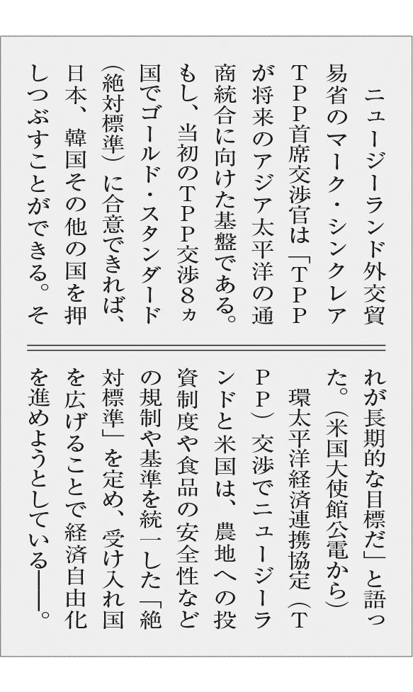
ＴＰＰ交渉を主導する両国のこうした狙いが、在ニュージーランド米国大使館の秘密公電に記載されていた両国政府の交渉当局者の会話から浮かび上がった。ニュージーランドの交渉当局者は「絶対標準」を受け入れさせる国として日本と韓国を名指ししている。これは国内の規制や基準の緩和・撤廃につながり、農業だけでなく国民生活の多くに影響を与える可能性がある。公電は、内部告発ウェブサイト「ウィキリークス」が公表。
もう一つ、面白い書籍を紹介したい。船瀬俊介氏の『「モンスター食品」が世界を食いつくす！』（イースト・プレス）である。この本は、食の業界と遺伝子組み換えが完全に破綻し、暴走しているさまをまざまざと描ききっている。
著書の言葉によれば、キングコーン、腐らないトマト、サソリの遺伝子を組み込んだ猛毒キャベツ、二倍の速さで成長する怪物サケ、ヒトの母乳を出す牛、羽根のない裸ニワトリ、抗ガン剤になるタマゴ、光る豚など枚挙にいとまがない。
この先、ＴＰＰとグローバリズムが浸透すれば、このようなものが食材として日本に入ってきかねないだろう。しかも、すでに一部は流通している。
やがて日本の農業は崩壊する......
ＴＰＰを使って経済支配をたくらんでいるのが「多国籍企業」である。これにはさまざまな分野があるが、食であれば、モンサント、シンジェンタ、カーギル、バイエル、ウォルマートなどがこれにあたるだろう。マクドナルドやコカコーラも、もちろん問題だ。
しかし、多国籍企業だけでなく、それに癒着している国際組織も含めて考えねばならない。たとえば世界銀行、国際通貨基金（ＩＭＦ）、世界貿易機関（ＷＴＯ）、世界開発協力機構（ＯＥＣＤ）、国連世界食糧計画（ＷＦＰ）、国連食糧農業機関（ＦＡＯ）、そして世界保健機関（ＷＨＯ）などが存在するが、これらはすべて癒着しているのである。
「彼ら」は「人々を不健康にする、支配する」ために存在しており、決して市民の健康に寄与してきたわけではない。国際機関は世界に平和をもたらし、世界を飢餓から救うという詭弁をかざし、米国政府とともに遺伝子組み換え作物を蔓延させてきた。
この流れの中にＴＰＰが入ってくれば、日本国そのものが壊滅的な状況となるだろう。そしてやがて日本の米や農作物も汚染され、在来種が奪われることになるであろう。
結局、このままいけば日本の農業は徹底的なまでに崩壊し、遺伝子組み換え食品や農薬まみれの商品、アメリカの乳製品などがさらに入ってくるようになる。
食は健康と直結し、命とも直結するが、日本人はそんなことにはまったく興味がないようである。もはや「経済戦争」という領域に差し掛かっていることに、あなたは気づくことができるだろうか。
遺伝子組み換え食品問題の根本
遺伝子組み換え食品（以下ＧＭＯと表記）についても書かねばならない。
ＧＭＯの何が問題なのだろうか？ 有名な御用ジャーナリストたちは何も知らないゆえにＧＭＯを推奨しているようだが、これをバカといわずして何をバカというのだろうか。
ＧＭＯの問題は、それ単体で解決できる問題ではない。一つはラウンドアップを主とした農薬との関係があり、もう一つはＴＰＰを代表とする海外生産品との問題がある。もちろん、ＧＭＯ単体による健康上の問題もある。
さらにいえば、Ｆ１雄性不稔種との関係の問題がある。動物実験や家畜への影響調査では、ＧＭＯによって生殖関連の障害が発生することが判明している（アメリカ環境医学会）。人間界でも近年、不妊症が急増していることは周知のとおりである。
２００４年５月にカナダのモントリオールで開催された第18回世界不妊学会で、男性不妊の発生率が世界的に急上昇しているという研究報告が行われた。日本でも１９９０年以降、精子数に強い減少傾向が示されている。
厚生労働省によると、２００４年から少子化対策として始まっている「特定不妊治療費助成事業」の２００８年度の支給件数は、約７万２０００件で過去最多を更新。全国の不妊専門相談センターに寄せられる相談は年々増加している。
ＧＭＯだけではなく、各種ワクチンや一般に言われているような環境ホルモン等も原因なのであろうが、これらは相関している。
不妊症の「原因」は精子の減少などといわれているが、それは「原因」ではなく「症状」であり、なんの説明にもなっていない。不妊症の原因は食物そのものであり、社会に蔓延する毒であり、医療用薬物であり、農薬などである。
Ｆ１雄性不稔種の危険性
ＧＭＯだけを気にかけていても、実は問題は解決しない。野菜や果物においてはＧＭＯだけでなく、Ｆ１雄性不稔種といわれるものが存在する。これに関しては、野口勲氏の著書『タネが危ない』（日本経済新聞出版社）や石井吉彦氏の著書『まず種から始めよ』（ココロ）が参考になる。
Ｆ１の特徴としては、大きさが同じになる、生育が早いなど、大量生産に適しているとされている。しかし、このように人為的な手が入り、形だけにこだわればこだわるほど生物特性は削除され、栄養学的にも栄養素が不足した野菜になっていく。
また、雄性不稔はミトコンドリア遺伝子異常で花粉を作れない株の種を使うが、この植物はいってみれば不妊植物である。結局、栄養的にカスなだけでなく、このＦ１種を栽培する時も農薬がしこたま使用され、しかもそれはもともと染色体異常のある野菜なのだ。
これはＧＭＯの輸入云々という問題ではなく、近所のスーパーで普通に売られているものである。つまり、ＴＰＰ以前の問題なのだ。
野口勲氏の話では、実験でこの野菜を食べ続けさせたところ、無精子ラットがたくさん出現したとされている。この因果関係は本来国家的なプロジェクトで調べねばならない。
さらに悲しい野菜もある。昨今は収穫量の増加、病虫害抵抗などの雑種強勢を目的に多くのＦ１作物が作られているが、最近の「はやり」は遺伝子組み換え技術を雄性不稔系統の開発に応用することだ。ようするにＧＭＯ＋雄性不稔＋農薬の「華麗なるトリオ」である。
公開されているものとして「除草剤グリホサート誘発性雄性不稔及び除草剤グリホサート耐性トウモロコシＭＯＮ８７４２７系統申請書等の概要」がある。開発しているのは今や悪名高いモンサント社である。
ちなみに、日本の食品安全委員会は２０１３年４月８日、某社の除草剤耐性・グリホサート誘発雄性不稔遺伝子組み換えトウモロコシＭＯＮ８７４２７について、飼料としての安全性に問題なしとの評価を正式に決定し、農水省ヘ通知すると発表した。近く飼料として承認される（有機農業ニュースクリップ）。
もちろん、安全性には大きな問題があるが、政府というのは「ただちに影響はありません」と述べる組織なのである。
これを見ても、日本では遺伝子組み換え食品だらけなのがわかるが、大企業ほど情報を操作し、ビジネス優先で裏であくどいことをしている。そのような企業の食べ物を買いながら、「私は健康になりたい」とか「なんで私が病気になっちゃったの？」などということ自体、的外れもはなはだしいということをあなたは理解できるだろうか。
健康になりたいというのであれば、食から見直さずして健康になれるはずがない。
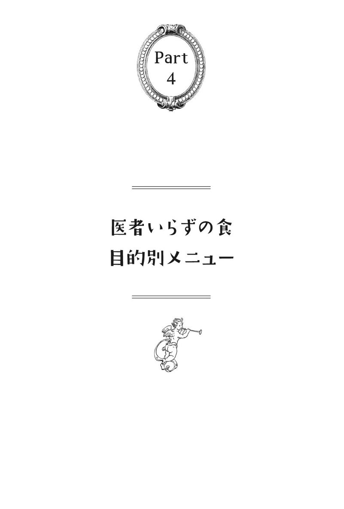
まず最初にいっておきたいのは、ここで紹介したレシピはそれぞれの章のテーマだけを対象としたものだけではないということだ。つまり、「放射能防御のためのメニュー」はアレルギーの人たちにも応用が利くし、「精神安定のためのメニュー」は老化を防ぐメニューにもなりうる。
私個人の意見として、よりその要素が強いかなと思うものを抽出しているに過ぎない。
栄養素だけでなく、食材の素質を考慮して、自分なりにより良い料理を作ってもらえれば幸いである。
原爆に被爆した秋月辰一郎医師の食事法
ここまで読んでくると「食べるものがない！」という絶望感に陥ることは必然であろう。それが本来正しい感覚であり、この世界はもはやまともな食べ物がないところにまでおとしめられているのが実情である。
しかし、それではこの本を買った意味がない。そこで、ここから先はどのようなものを食べればいいのか、どのあたりから気をつければいいのか、具体的な食事レシピなどを提示していければと思う。
ただし、あくまでも「一例」であり、毎日同じ食事を続けるなどの愚行は避けていただきたい。
まず、現在においてほとんどの日本人が危惧しているのが放射能の問題であろう。放射能の問題は現在進行形であり、国家が提示している放射能の数字はほとんどが嘘の数字である。
この本ではそれについては詳しく取り上げないが、簡単にいえば、モニタリングポストの設置に関する情報誘導と、α、β、γ線などの違いを巧妙に利用した測定値捏造である。そのほか細かいことを述べれば、まさに捏造のオンパレードといってよい。
放射能を避けるために最も普遍的な食事は、すでに提示されている。その食事法を示した有名人が秋月辰一郎医師である。
彼は長崎の病院（浦上第一病院、戦後に聖フランシス病院と改名）で自身が原爆に被爆しながら「食事療法」により身を守る方法を実践して伝えた方だ。
彼の言葉を引用しよう。
「食塩、ナトリウムイオンは造血細胞に賦活力を与えるもの、砂糖は造血細胞毒素。玄米飯に塩をつけて握るんだ。からい濃いみそ汁を毎日食べるんだ。砂糖は絶対いかんぞ！砂糖は血液を破壊するぞ！」
もともと玄米菜食を実践していたこと、医大の放射線教室で助手をしていたことなど、さまざまな経験が病院のスタッフや患者を原爆症から免れさせることにつながっていったのだろう。
チェルノブイリ原発事故の時、秋月医師の手記が英訳されていたので、ヨーロッパに味噌がたくさん輸入されて売れたという逸話が残っている。
秋月医師が実践していたのは、「対放射性物質」限定の話ではない。体調をよく保つための基本的な方法でもある。これはガンなどの食事法としても応用できる。
やっぱり日本人に合うご飯とみそ汁
日本食というと、その代表はご飯とみそ汁になるだろうが、この食事は本当に日本人に合っている。ただし、これまで述べてきたように、ご飯は玄米でなければならない。白米は精製されて栄養素がはぎ取られた粕であり、今の時代を考慮すれば、白米を食べて健康になれる道理はない。
ただし、玄米の場合は栽培過程で放射能を吸い取って蓄積してしまうという問題点があるため、放射線能度が高い地域の玄米は、逆に健康を損なう可能性があるとことも知っておくべきだろう。
そうなると福島からある程度離れた地域のものを選ぶしかないが、それも現代では農業への圧迫により量が限られている。これほどまでに日本人が追いつめられているということを皆さんは自覚できるだろうか。
からい味噌汁に意味のあることは、秋月氏がいわれるとおりである。これは塩分だけでなく、発酵食品であることに意味がある。
味噌はほかの食品同様に添加物が入っているものを使ってはならない。現在、味噌に関して「添加物なし」と表示されているものが増えているが、そんな味噌の中にも添加物が入っていることがある。こればかりは消費者の目を養うよりほかに方法がない。
また、塩分控えめ味噌というのが大々的にいわれているが、これを使うのは不健康になりたいと宣言しているようなものである。本当の塩や味噌は塩化ナトリウムだけでなく、さまざまなミネラルが含まれており、血圧を無理に押し上げたりはせず、その人の適正血圧に調整してくれる。
そもそも現行の血圧の基準が間違っていることを思い出さねばならない。
梅干し（昔ながらの製法による天日干しをしっかりして、天然塩だけで漬け込んだもの）や漬物（同じく昔の製法で添加物なしのもの）にも意味がある。
これらに含まれる自然由来のクエン酸、菌、ミネラルなども、化学物質や放射性物質の解毒効果があることが認められている。
本来「まごはやさしい」の論理でいえば、野菜や魚やきのこは重要な栄養素を得るための食材である。しかし、放射能の問題を考えれば、それは単純に採用できないという問題がある。
たとえば放射能は、いまだ福島から海に垂れ流されており、魚は少しずつ放射能を受けて濃縮される存在となっている。関東の放射能はいまだに高いレベルにあるのだが、きのこなどは放射能をためこみやすい性格を持っており、食べたい食品が食べたくない食品に変貌してしまっている。
海の放射能は海流に乗って循環しており、もはや太平洋だけというレベルではない。それでも、やはり太平洋側と日本海側、福島近辺と遠方では違いがあるので、それを考慮して食材を選ぶ必要があろう。
秋月氏も指摘している放射能防御に有効な食材の一つが「ごま塩」である。黒ごまがよく使われているが、これも産地を選べば放射能防御に重要な役割を果たす。ごまはミネラルの含有率が高い健康食品であり、ごま塩以外にも活用していただきたいと思う。
梅の黒焼きや梅肉エキスは、自然療法では排毒効果が高いとされており、私は梅肉エキスをこぶ茶にいれる「梅こぶ茶」が好きである。番茶を勧める人もいるが、これは好みで結構であろう。
調理法の基本として、調味料は必ず無添加無農薬の厳選したものを使うことが重要となる。めんつゆ、ポン酢、ドレッシングなどは自分で作ることも重要である。
メニューの一例
●玄米
●漬物、梅干し
●納豆とねぎの昆布巻
●魚（青魚）と大根おろし
●ごま塩
●味噌汁（わかめと豆腐いり）
●梅こぶ茶
精神的問題を抱えている場合、「直接糖」は禁止
本来、私は精神薬を中心とした医原病や薬害を取り扱ってきたので、精神をおかしくする食事については指導する機会が多かった。ここでもそのような経験に沿って食事を考察してみることにする。
たとえば、Ｅ・Ｍ・エイブラハムソン博士とＡ・Ｚ・ペイゼット博士は、次のようにいっている。
「血糖値が通常より低いと細胞、とりわけ脳細胞は栄養不足になる傾向がある。この低血糖は食事によって回復するが、細胞、とくに脳細胞が慢性的に栄養不足になると、どういうことが起こるか？
その場合、最も弱く、最も傷付きやすい細胞が最初に損なわれることになる。こうなると脳はすぐに障害を起こし、あらぬ妄想や幻覚を告げるようになり、撃鉄を充分引かないうちに弾丸が飛び出すように、わたしたちは早まったことをしでかすようになってしまいます」
この言葉は非常に重要である。というのは、食事の中の糖分の多くは人を精神的に狂わせる作用があるからだ。
精神面を強くしたいと願うなら、甘いものは砂糖であれ、甘味料であれ、避けねばならない。調味料としての砂糖やてんさい糖や黒糖であっても、さらにいえば、メープルシロップやはちみつであってもすべて使ってはいけない。
もしあなたが精神的に悩んでいたり、精神的諸問題を抱えているならば、これらの直接糖は一切不可である。
バージニア州の少年院で囚人２７６人を対象に行われた興味深い研究がある。砂糖の摂取を減らしたグループと、普通食のグループと、それぞれの行動変化を比べるというものだ。
この実験を行ったシュテフェン・ショーエンセーラー博士によると、砂糖の摂取を減らしたグループは普通食のグループに比べて、反社会的行動が46％低下した。特に暴行が82％減、盗みは77％減と激減した。
この結果を受けてワシントンなど12の少年院、計８０００人における同様の大規模調査が行われ、この調査でも反社会的行動は47％減という結果が出た。彼らに対する栄養学的研究では、ビタミンＢ１、ビタミンＢ２、ビタミンＢ６、ナイアシン、葉酸、カルシウム、マグネシウム、亜鉛、鉄などの不足が目立った。
精神が未熟では精神不安定は解消されない
ただし、栄養学ですべての精神症状が改善するというものでは決してない。どんなものでも改善率は１００％ではなく、基本的には「そうなった社会的原因」を追究しなくてはならない。しかし、食事や栄養素は精神を落ち着かせるための、基本的土壌であることは間違いのない事実である。
その基礎的土壌の上にどんな社会的コミュニティを作っていくかで、精神的に豊かな国か貧しい国かが決まる。
また、腸内細菌についても考慮する必要がある。
腸内細菌は栄養状態にも密接にからんでいるだけでなく、悪玉菌が増えれば毒素（たとえばアンモニアなど）が体にまわりやすくなる。これを減らすためにも有用な発酵食品を食べることが必要なわけだが、この発酵食品は日本人の場合、日本食でなければならない。いわゆるヨーグルトなどは駄目である。
なぜなら、牛乳に関係する食品はもともと日本人の体質に合っていないからである。摂るならば味噌、醤油、納豆、漬物、梅干し、塩麹など日本古来の発酵食品を検討しなければならない。
もちろん、最終的に精神をよくするためには精神の修行や知恵や知識以外にはあり得ない。拙著『医学不要論』では三つの輪を提唱して精神の輪の重要性を説いたが、これは当然のことである。
いかにいいものを食べていても、精神が未熟では必ず精神状態は不安定になる。逆にいえば、慢性的な栄養不足でも非常に健康的と思われる人々がいるが、これは食というより精神面の充実が強く発現していると考えられる。
電子レンジが不健康を作る
もう一つ、精神的に不安定な人の食事の代表格が「加工食品」である。しかもその加工食品を電子レンジで温めるという愚行を犯しているが、これでは精神的に不安定になるのも当然であろう。
添加物たっぷりのところに、さらに残った数少ない栄養素さえ電子レンジで破壊するのだから、まさにカスを食べているに等しい状態である。
近代において、電子レンジの危険性を具体的に証明した研究としては、ハンス・ウーリッヒ・ヘルテル博士の報告があげられる。電子レンジで温められた食べ物は栄養素が著しく変化し、食べた人の血液中に劣化を示す変化を生じると、彼は述べている。
その主要なポイントは以下のとおりだ。
コレステロール値を上げる
白血球数が増加する（体内に毒が存在することを示す）
赤血球が大幅に減少する
放射性合成化合物の生成（自然界に存在しない物質）
ヘモグロビン値の低下（貧血傾向を示す）
しかし今日も某テレビ局を中心に、自称料理研究家が毎日電子レンジであなた方を不健康にするための作戦を練っている。
子供の病気はまわりにその理由がある
フランスの産科医で「お産の神様」とよばれたミシェル・オダン氏は、自著『プライマル・ヘルス』（メディカ出版）の中で「プライマル・アダプティブ・システム」という考え方の重要性を説いている。これは、最初、あるいは基本的なという意味を持っている。
子供は胎児期↓新生児期↓乳幼児期にそれぞれが異なる部分で発達し、最終的に幼児期の終わりにはシステム全体が成熟していく。そして、このシステムが高度になるか否かは、すべて母親次第であるという考え方だ。
胎児にとって悪い環境、たとえば母親が食事を怠り、社会への学びを怠った状態のなかで無数の毒を取り込んでいくとする。そういう環境で生まれてきた子供は設定レベルが低いままであるため、将来的にもさまざまな健康問題を生じやすい傾向があるということを提唱している。
このオダンの考え方は、私にとっては非常に理解しやすいし、真実をついている。しかし、現代の母親は自分のプライドにしか興味がないため決して認めることができない。現代の母親は、まず最初に「仕方がない」としかいわないのだ。
そして、子供に健康問題が起こった時は自分ではなく、他人を責めるというのも特徴である。本質や原因などを理解する気はさらさらないまま、さらに医学やシステムに頼って子供を苦しめていき、それさえも正当化していくのがパターンである。
子は親の鑑とよくいうが、現在子供に起こっていることはすべて必然でしかない。子供が病気なら、子供が病気になる理由がまわりにあるということだ。
それらを精神医学は否定しながら「あなたのせいではないんだよ、病気なんだよ」と近づいてくるが、その甘美な声に現代の親たちは耐えることができない。常に世界中の親たちは子供を虐待していると、私は述べたい。
肉食も考慮に入れる
話を食事に戻すと、精神を安定させることに関しては、甘いものを避ける、ナイアシン（ビタミンＢ３）の重視、カルマグ（カルシウムとマグネシウム）の重視、そして油を摂るということを念頭に置く。
精神的に落ち込んでいる場合は、肉食を入れることも考慮していただきたい。
そのほかにも重視すべきことは多数あるが、これらを考慮して肉食も交えた一例として、以下のレシピをあげてみる。
繰り返すが、これは一例でしかない。各自が原則を学び、自分で料理を作れるようになることを願いたい。
メニューの一例
●レバー（グラスフェッドビーフ）と小松菜の炒め物
●にんにくやカキのバター炒め
●玄米ガーリックライス
●野草（特に春物）の天ぷら（油は良質のごま油など）
●野菜と椎茸と豚肉のハーブ炒め
●エビとブロッコリーのスパゲティ（たらこと刻みのりのせ）
菜食主義のほうが末期ガンの根治には結果が出ている
ガン対策もまた基本的には同じである。
自然界の動物は天命を全うすると、苦しまないで眠るように安らかに息を引き取る。自然の摂理にしたがっていれば、そもそもガンになどならないことは、すでに述べたとおりである。
「年老いてその時がくると、食べないから死ぬのではない。死ぬ時が来たから食べないのだ」（『大往生したけりゃ医療とかかわるな』中村仁一著、幻冬舎）
ガンという病気を概念としてどう考えるかが、食事を考えるうえでは非常に重要となる。ガンを治療するための食事療法として、玄米菜食やマクロビオティックやゲルソン療法などに代表される菜食主義が存在するが、この菜食主義が本当にガンによいのかは検討する必要がある。
アミノ酸や油は生体を構成するためには必須であり、その栄養素を獲得するために肉や魚は都合のいい食材であり、ネイティブアメリカンや古典民族には肉食系が多かったことは考慮されなければならない。
前述したように、現代の医学分析による肉食排除にはバイアス（偏向）が多く入っている可能性があることは否定できない。ただし、肉食でないとアミノ酸が摂取できないわけではないことも、もちろん考慮しなければならない。
私はここで、ガンに対して肉食礼賛を勧めたいわけではない。私個人の経験だけでいえば、肉食主義ではなく菜食主義を採用したほうが末期ガンの根治においては結果が出ている。
なお、ここでは「治った」「消えた」を前提にしており、「生存期間が延びた」ということを前提にしていないことに留意していただきたい。
また、あくまで多くの経験談を聞いたものを私なりに総合しているだけであって、統計的な調査に適応しきれてはいないこともご理解いただければ幸いである。
ガン研究で有名なコリン・キャンベル氏は『葬られた「第二のマクガバン報告」』（グスコー出版）で、ホールフードの緑黄色野菜や豆類には必要量のたんぱく質が含まれていると記載している。私個人が末期ガンなどから生還したという方の話を聞く限りでも、菜食主義を中心としたほうが結果はよい。
魚については賛否両論があるようだが、汚染物質や毒物に汚染されていない魚であれば、私は魚は摂取しても構わないと考えている。
「死を招く食品」
ジョエル・ファーマンは菜食を勧めるアメリカの有名な医師の一人である。彼は免疫力を向上し、フィトケミカル（２４２ページ参照）を摂取してガンに立ち向かうための原理として、以下のような事柄をあげている。
大盛りサラダを毎日食べる
少なくとも半カップの豆類を料理して食べる
３個の生の果物を食べる
少なくとも28グラムのナッツか種を食べる
少なくともサラダボウル一杯の緑色野菜を料理して食べる
また、死を招く食品として以下の５つをあげている。これはこの本が提示している問題点に近いところもある。
バーベキューで焼いた肉、加工した肉、市販の赤い肉
揚げ物
低脂肪でない乳製品やトランス脂肪酸
清涼飲料水や砂糖や人工甘味料
精製された小麦製品
メニューの一例
●にんにく、ブロッコリー、セロリ、しめじ、ズッキーニ、ナスなどを使ったラタトゥイユ
●さまざまな野菜を使ったタジン鍋（豚肉を入れても可）
●にんじん、たまねぎ、キャベツのパリパリ塩サラダ
●キノコとねぎのそば
●びわ酒
●玄米と小豆のごはん
肉や卵を食べたい人は、必ずグラスフェッドビーフやそれに類する豚肉や鶏肉、有機卵（いわゆるレモン色の卵）を使用すること。
なぜ昔はアレルギーがほとんど存在しなかったのか？
この世にはアレルギーと呼ばれる病気がある。そして、アレルギーといわれている人はこの世にゴマンといるだろう。しかし人々は、その病気があると洗脳され、刷り込まれていることに気づいていない。
なぜ人々は、昔はアレルギーなどというものがほとんど存在しなかったことを考慮しないのだろう？ なぜ人々は、アレルギーが免疫の異常と考えてしまうのだろう？ なぜ人々は昔、花粉が飛びまわっていた時代に、花粉症などがほとんど存在しなかったことを思い出さないのだろう？ 今、慢性関節リウマチ、ＳＬＥ（全身性エリテマトーデス）、花粉症、アトピー性皮膚炎、ぜんそく、橋本病からバセドウ病まで、なぜそうなるのか？
人々はその真の理由ではなく、表面上起こった出来事にしか興味がないから解決できないのだ。
これまで述べてきたように、人間は根本的な解決などというのを望んではいないらしい。これはきわめて科学的、医学的な話であり、決して宗教や哲学的な話ではない。
ここから結局、治る人と治らない人、治せる人と治せない人の差が出てくる。
野生の動物でリウマチになった動物はいない。野生動物でアレルギーで花粉症になっている動物もいない。古代の人々にもそのような病気になる人々は、まずいなかった。
古代の人々の死因、持っている病気は動物と共通性があり、現代人とはかけ離れている。そして考えることを忘れた人類が、病院で病気を悪くすることを望んで、言い訳と正当化を繰り返して通院を繰り返している。
「アレルギーは免疫異常ではない」という仮説
アレルギーとは免疫異常であると、西洋医学的にはいわれている。しかしそれは、どうして免疫異常だと結論づけることができるのだろうか？ 免疫異常であるとするならば、なぜ昔は免疫異常がそんなに少なかったのだろうか？
これらを考慮していくと、今アレルギーといわれている状態は、実は免疫異常ではないのではないかという疑問が生じてくる。これこそが、真の意味で素人的な発想に立った疑問というものである。
私の中で立てられている仮説は以下である。
免疫はまったく狂ってはおらず、常にロボット的に同じ免疫行動をしている。なのに昔と今で反応が違う真の理由は、入ってくる物質、つまり毒の内容が一番の要因であるということだ。
もちろん、これは体質的な違いや栄養素やミネラルの状態にも影響を受けている。毒物が入りやすい状況であっても体のほうが丈夫な状況であれば、当然、アレルギーなどといわれる状況は生じにくい。
スギ花粉症を例にとって説明すれば、昔も同じように花粉が飛んでいたのに、なぜ昔の人々は花粉症にならなかったのであろうか。
これは体の栄養状態にもよるが、一番は花粉そのものの質によると考えられるということだ。要するに、昔の花粉は大した毒ではなかったが、今の花粉は猛毒であり、体が反応してしまう物質であると考えられる。
たとえば、花粉の外についている微粒子についてはどうだろう？ 昔は粉塵もＰＭ２・５もそれほど飛んではいなかった。しかし、今はスギ花粉にもそのような毒性物質が山ほど付着している。
そんな毒付き花粉が飛んでくると、人間の免疫はどのように反応するであろうか？ 当然、「そんな花粉いやだ、あっち行って！」と反応するであろう。
すると、体内は最初、体液によってそのような毒物を外に押し流そうとする。それが鼻水であり、涙であるということをあなたは想像することができるだろうか。
さらにいえば、花粉の毒は花粉の外側だけに限られたものであろうか。
これまで書いてきた農薬などの問題を考えてみれば、散乱している多くのスギ花粉が農薬まみれであり、花粉の中にさまざまな化学物質が入り込んでいることが疑われるのだ。
我々は目で見てもそれを判断できないが、体自身は非常に敏感かつ正直なので、それを追い出さずにはいられない。それが免疫というものの本質なのである。
つまり、アレルギーが免疫の異常であると医学は謳いながら、実のところ、あなたの免疫は微塵たりとも乱れてはいない。狂っているのはあなたの免疫ではなく、入ってくる異物であるのだ。
乳製品を摂ることは論外
これらを総合すれば、アレルギーであっても、よくするために行うことは同じである。解毒のプロセスと毒を体に入れないことが重視される。
アレルギーは即時的なものが多いので、アレルギーを起こす物質は極力遠ざけなければならない。農薬、添加物、ホルモン剤や抗生物質はもちろんのこと、重症のアレルギーの場合は「種」からきれいなものを選ばなければならない。
そして、食事以外にも水や洗剤やせっけんや化粧品、服やクーラーや建築性の化学物質（ホルムアルデヒドやビニールクロスなど）にまで注意を払わねばならない。
しかし、実際にそこまでしている人はほとんど存在しないうえ、いくら注意していてもこの世界に生きていれば、どんどん有毒物質が入り込んでくる。これを完全に避けるのは不可能に近いかもしれない。
もし私に資金があればこれらを証明できるのだが、残念ながらそんな資金も人手も一切ないのが現実である。
不可能に近く抑えきれないからといって、免疫抑制剤（たとえばステロイドなど）を使うことは、さらに問題だ。これは、原因解明に向かず、問題解決に何一つなっていないという点が指摘されるが、もっと問題なのは精神薬などと同様、そのようなクスリにどんどん依存し、それなしではいられなくなるからだ。
これが、いわゆるステロイド依存の原点であり、原理であるといえよう。
アレルギーと呼ばれる類のものをよくするには、徹底的に毒性がないものを選ぶと同時に、良い意味で免疫調節してくれる食品を組み込むことが求められる。
アレルギーを避けたいのであれば、乳製品を摂るのは論外であり、ムコ多糖類はアレルギーの調節作用があるので、これの豊富な食材を選ぶ必要がある。
メニューの一例
●甘酒（砂糖断ちのために使う）
●天然こんにゃく、アロエの刺身
●セロリ、トマトなどの野菜マリネ
●玄米カレーライス
●ラム肉（ラム肉は薬物の影響を受けにくい）のローズマリー風
●麦飯と自然薯の青のりあえ
●もずくとオクラの酢の物

良い塩と「フィトケミカル」
ここまで読んできて、すべて原理原則は同じじゃないかと思っていただける人がいれば幸いである。ただ目的が変われば、少しずつ意識すべき食材や栄養素が違ってくるというだけの話だ。
老化を防ぐうえで重要な栄養素とはシリカ、マグネシウム、ＥＰＡやＤＨＡ、オメガ３系脂肪酸、ＳＯＤ（活性酸素を取り除く働きをする酵素）作用のもの、ビタミンＥ、ビオチン（ビタミンＨ）などを含むものが代表的である。
また塩についても考慮が必要で、良い塩は体の動脈硬化や老化や認知障害をむしろ防いでくれる。塩がいけないというのは、精製された「塩化ナトリウム」がいけないのである。
塩という字は「人が口にして血になる土」であるから、良い塩が良い血液を作るという話があることも覚えておけばいいだろう。
人間の血液成分と海水とは似たようなものだから、海水の組成成分を考えた塩を使うことはとても大切だ。つまりそれは、微量ミネラルがどれくらい含まれているかが重要なカギになる。そして、このミネラルは「解毒」にも重要な意味を持つ。
「フィトケミカル」と呼ばれるものも重要であろう。これは、天然成分で抗酸化作用を持っている物質の総称だ。たとえば、アントシアニン（赤ワインなど）やイソフラボン（大豆など）やリグナン（ごまなど）、イソチオシアネート（ブロッコリーやワサビなど）やカロテノイド（ホウレンソウやトマトなど）やβグルカン（キノコ類）などもこれに当たる。辛味のカプサイシンや生姜のジンゲロールもそうだ。ガン予防だけでなく、老化を防ぐ意味でも重要な栄養素であるといえる。
粗食の重要性
糖はやはり老化においても重要な意味を持つので、可能な限り直接糖を避けねばならない。たとえ間接糖であっても、摂り過ぎは問題である。
糖が多いと、体内で糖化といわれる過程を経て終末糖化産物（ＡＧＥ）が生成される。これは老化をもたらす重要物質といえよう。
また逆に、きれいな油は摂るようにしなければならない。油は栄養素やエネルギーだけでなく、さまざまなホルモンの原料ともなる栄養素であり、老化防止にも重要な意味を持つ。ただし繰り返すが、重要なのは「きれいな酸化していない油」であるということだ。
もう一つは粗食の重要性である。粗食についてはすでに書いてきたが、老化においても重要である。
年齢が増えれば食欲が下がっていくのは必然であり、一日二回食や一回食なども考慮しなければならない。
美容などを求めるアンチエイジングでも飽食は大敵となる。体が栄養素を欲し、栄養素を吸収しやすい環境を作ることが重要であり、与えてばかりいるとむしろ体は弱ることを知っておくべきだろう。
メニューの一例
●オクラ、ニンニク、自然薯、納豆、ネギのバクダン（有機卵を入れても可）
●あじ、いわし、桜えびの刺身
●豚肉の和風ステーキ セロリ、ニンジン、三つ葉添え
●鮎の塩焼き
●玄米カレーライス
●切り干し大根
●干しシイタケを使ったもの
●じゃこの天ぷら、抹茶塩
※５ バクダン：寿司屋の賄いメニュー
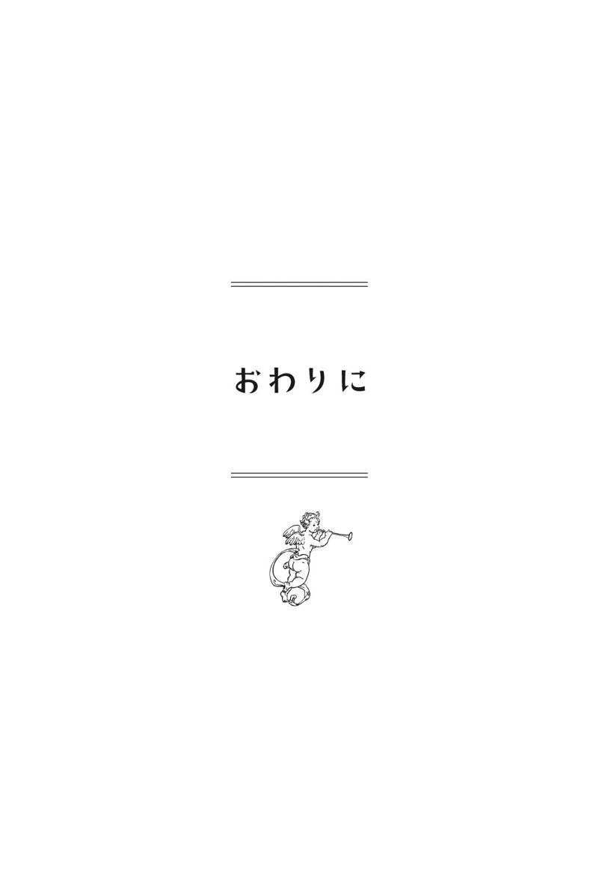
この本は食について書いてきた。さまざまな食の本があるが、正直、「食の概念に正解などない」という考えで書かれた本はあまりないと思っている。
これまで著書の中で、私の精神を占める基本的な発想が虚無主義（ニヒリズム）であることを述べてきたが、当然、それはこの本にも横たわっている。食べるものが見つからないという現代社会において、虚無主義に陥らないというのであれば、それは単に無知であるからにほかならない。
とはいえ、いろいろな事情を知っていても虚無主義に陥らず、頑張っている方々もいる。私は、そのような方々に頑張るなといっているわけではない。
私が虚無主義になりきれずにこのような本を書き、エセ虚無主義に陥っている真の理由は結局、家族であり、子供の存在でしかない。もともとの目的は高尚なものでもなんでもなく、ちっぽけなものでしかなかった。
しかし、いまや私より悪名高い医師は存在しなくなり、それに対する誹謗中傷にも慣れてしまい、誰が何をいってこようが感じなくなってしまったが、これはほんの少しだけ高尚な目的が持てているからでしかないだろう。
食を見直すということは、土と自然を見直すことであり、ひいては日本や世界を見直し、地球を見直すことでもある。
私は人間が平和でいたり、ヒューマニズムであったり、偽善主義であったり、その他もろもろの人間的なものには興味がまったくわかない。本当に人間は滅ぶ価値しかない生き物であると思っており、その中でも特に大人はすべて滅ぶにふさわしい生き物であると思っている。
私は心底、自分や人間という存在が恥ずかしい。神という偽善に滅ぼされるのはごめんだが、真の自然である地球に滅ぼされるのなら、甘んじてそれを受け入れたいと思う。
とはいえ、滅ぼされるのを座して待つのも、滅ぼされるに値する存在のまま妥協しているのも、やはり嫌なのだろう。それは、私が虚無主義に陥りきれていないことを証明するものである。
人間が真にこの世界に生きるにふさわしい生物となれば、地球に滅ぼされることもなくなるかもしれない。それさえも一つのヒューマニズムといってしまえばそれまでだが、一切の嘘と妥協を排して、やるべきことをやろうとするならば、やっと地球の怒りも収まってくれるのではないか。
そう考えてしまうところにエセ虚無主義的な考え方が存在している。
食に関して悩み、苦しみながら、真に生物が食べるべきものを模索する人々と、食物連鎖について考慮することができるすべてのまっとうな生物たちに語りかけたい。もはや我々は、自分が生き延びることも、自分が栄えることも考えられるような状況ではなくなっているのだと。
人類の人口は増えていても、科学が進んだつもりになっても、我々人類もほかの生物も、自然も地球もすべて死ぬ寸前なのである。これほどまでに汚れ、これほどまでに立て直しのきかない世界状況は今までになかった。
もちろん、そうなったことには主導した張本人たちがいるのだが、それを跳梁跋扈させた原因が一般市民にあることも決して忘れてはならない。
この状況に奇跡が起こる可能性があるとすれば、すべての人が現状を知り、やるべきことをなすよりほかにない。自然農法や食を根本から見直そうとする人々には、その可能性を感じる。だからこそ、私は医者などどんな人間であれ応援しないが、そのような人々であれば応援したいと思うのである。
食することは生きることであり、生きることは闘うことである。
願わくば、読者たちが真に闘うべき者たちと闘うことを願って、この本の結語とさせていただきたい。
参考文献
自著 『精神科は今日も、やりたい放題』
『心の病に薬はいらない』
『医学不要論』
『医者とおかんの「社会毒」研究』
本文中に紹介以外の他著
『医療殺戮』（ユースタス・マリンズ）
『脳はバカ、腸はかしこい』（藤田紘一郎）
『超寿の条件』（真弓定夫）
『がんを治すのに薬はいらない』（真柄俊一）
『「老けない体」は骨で決まる』（山田豊文）
『家族みんなが病気にならない食べ方事典』（山田豊文）
『炭水化物が人類を滅ぼす』（夏井睦）
『本当は危ない植物油』（奥山治美）
『栄養医学ガイドブック』（柏崎良子）
『給食で死ぬ!!』（大塚貢ほか）
編集 吉良さおり
稲垣豊
デザイン 久保洋子
2013年12月13日 初版発行
2015年 6月22日 7刷発行
著者 内海聡
発行人 吉良さおり
発行所 キラジェンヌ株式会社
東京都渋谷区笹塚3-19-2青田ビル2F
TEL 03-5371-0041 FAX 03-5371-0051
印刷・製本 日経印刷株式会社
©2013 Satoru Utsumi
Printed in Japan
ISBN 978-4-906913-19-0
定価はカバーに表示してあります。落丁本・乱丁本は購入書店名を明記のうえ、小社あてにお送りください。送料小社負担にてお取り替えいたします。本書の無断複製（コピー、スキャン、デジタル化等）ならびに無断複製物の譲渡および配信は、著作権法上での例外を除き禁じられています。本書を代行業者の第三者に依頼して複製する行為は、たとえ個人や家庭内の利用であっても一切認められておりません。